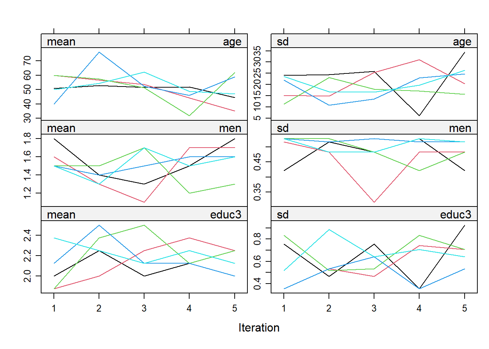
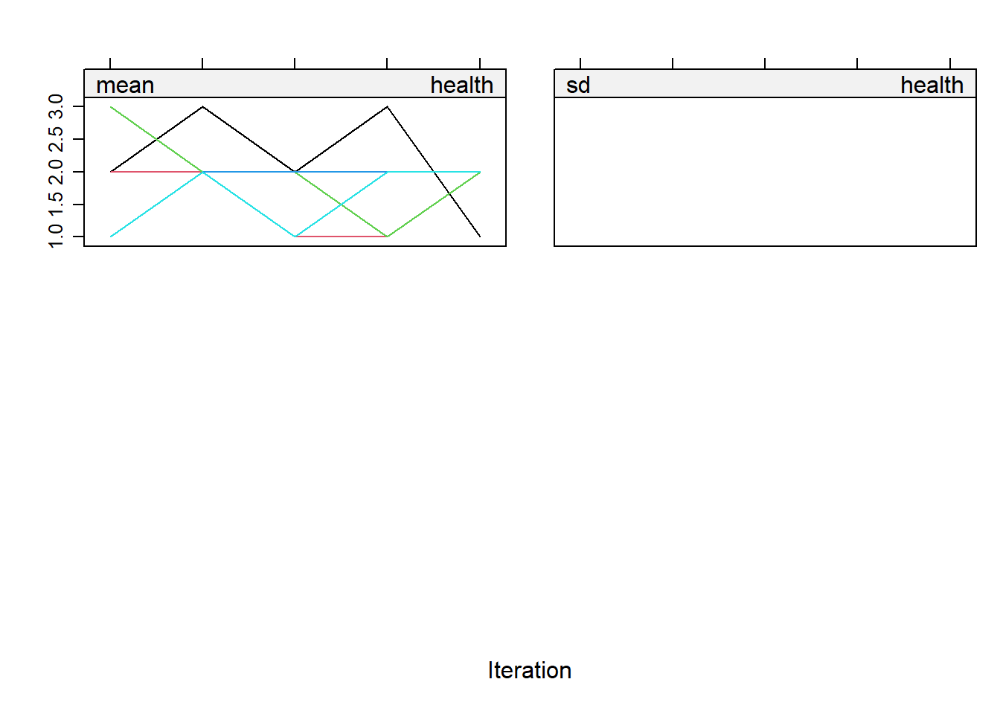

A Introduction to R for SNA
Please email any comments to: jochem.tolsma@ru.nl
A.1 Preliminary notes
This very short R tutorial is for students who already have some experience with R who want to make the switch from stata/spss to R.
- In this tutorial I assume you will work with RScripts (.R files) not with Rmarkdown (.Rmd files)
- I will show you how to do things in base R and in a Tidyverse way.
A.2 Getting up and running
- install the latest version of R: R
- install the latest version of RStudio: RStudio
- open RStudio and follow a brief tour/tutorial brief tour of Gulzar
Do you Want more information, or are you looking for a different (tidyverse) tutorial?
- R-bloggers
- RStudio cheatsheets
- R for Data Science
- Statistical Inference via Data Science: A Modern Dive into R and the tidyverse
Are you a Research Master Social and Cultural Science student? Or, a social science student/scientist with some statistical background in descriptive and explanatory statistics (e.g. regression analysis) who wants to make a switch from SPSS to R? Please read on.
Open RStudio. Your screen will look something like this:
Figure A.1: Screenshot Rstudio
- During the workgroup I will show you around the major subwindows and taps in RStudio.
A.3 Working with RScript
- Open a new R-script (via file –> new –> RScript (see Figure A.1 Arrow 1), or simply hit Ctrl+Shift+N)
- Start your script with your name and date.
- Start with a clean workspace.
- Start with the latest versions of R, RStudio and your packages.
- Load the additional packages you will need later.
- Define your workdirectory.
Thus your RScript will look something like this:
########################### Title: Introducation to R for SNA Author: J Tolsma version: 30-10-2019
# start with clean workspace
rm(list = ls())
# install.packages I will need later here
install.packages("installr") #you first install packages
require(installr) #then you will need to load them. This package is used to simply update R
install.packages("foreign")
require(foreign) #used to read in spss data files
require(tidyverse)
# update if necessarry. Best to run this command in RGui, not in RStudio.
updateR()
# define workdirectory, note the double backslashes
setwd("C:\\SNA-4-Social-Scientists\\") #change to your own workdirectoryDo you see I start some lines with a # these lines are comments and not code/commands. This is similar as the * sign in SPSS.
To run some code, you place your cursor in the line and hit Ctrl+Enter. You may also select the code you want to run, or copy and paste it directly in the console window (A.1 Arrow 2). To see which commands you have executed, you may want to have a look at the history tab (A.1 Arrow 3).
Hint 1: In the upper right corner of the code blocks you see a copy-and-paste sign. You may use this to copy and paste the code of this tutorial in your own script.
Hint 2: You really want to learn R? Never ever copy and paste code. Type the code yourself.
A.4 Installing additional packages
You will probably always need to load and/or install additional packages. You may want to use RStudio’s functionality (A.1 Arrow 4). I normally prefer to put everything in my script. See for example in the code block above, line 9 to 12.
A.5 I don’t understand the code!!
When you see functionname()4 it means we use a build-in function of R If you want to see how lines/commands/functions work, try to decipher them from the inside out. Thus if you want to dechiper rm(list=ls()):
ls()list=ls()list
Let’s give it a go:
#> [1] "colorize" "tesvariable"#> [1] "colorize" "tesvariable"#> [1] "colorize" "list" "tesvariable"#> [1] "colorize" "tesvariable"#> character(0)If you want to know more about specific functions, try to use the help function. For example try the following:
?ls?rm
Any idea what <- does?
At first it will be difficult to read the R Documentation pages. Don’t worry, you will get the hang of it.
How am I to remember all that code/syntax??!!
- By using them.
- You don’t need to, you just need to remember in which script you used them before.
- By using existing cheat sheets
- By making your own cheat sheets.
You being the ideal student, you started your own cheat sheet. What should be on it by know?
Functions:
install.packages()# to install additional packages. Only do this once or to update package.require()# activate installed packagesetwd()# set your working directoryls()# list the objects in your environmentrm()# to remove objectspackages:
installr# a package to easily update R (needs to be run in Rgui directly instead of RStudio )foreign# to read in spss data filestidyverse# a bunch of packages which allows for a completely different way of programming/scripting in R.
operators / symbols:
?# if placed in front of a function opens up the help pages.<-# used to assign values/objects to a different object.=# used to assign values/objects to arguments within a function.
A.6 Reading in data files
We are going to work with two datasets: “Culturele Veranderingen.” For more information on these datasets, see here.
Please download the files to your working directory.
Cultural_Changes_2008.sav
Cultural_Changes_2010.sav
There are different packages to read in data. Generally, I would recommend to use the haven package. In the past I used the foreign package. The advantage of using haven::read_spss is that more information is stored in the dataset and in the variables (variable/value labels!!). A disadvantage is that not all other functions/packages of R are capable of dealing with the data object that haven produces.
below I will use
package_name::function_namenotation, to make explicit from which package the function belongs.
# ignore the warnings ?read.spss note that I have saved the data files in a folder called
# 'addfiles'.
cv08 <- foreign::read.spss("addfiles\\Cultural_Changes_2008.sav", use.value.labels = T, to.data.frame = T)
cv10 <- foreign::read.spss("addfiles\\Cultural_Changes_2010.sav", use.value.labels = T, to.data.frame = T)
# normally I think setting use.value.labels=F is more convenient. Thus lets load the data again but
# now without labels
cv08_nolab <- foreign::read.spss("addfiles\\Cultural_Changes_2008.sav", use.value.labels = F, to.data.frame = T)
cv10_nolab <- foreign::read.spss("addfiles\\Cultural_Changes_2010.sav", use.value.labels = F, to.data.frame = T)
# finally, import the data using haven
cv08_haven <- haven::read_spss("addfiles\\Cultural_Changes_2008.sav")
cv10_haven <- haven::read_spss("addfiles\\Cultural_Changes_2010.sav")So you see I read in the data by using the function read.spss() of the package ‘foreign.’ Within this function I set some arguments/parameters (e.g. use.value.labels).
Now we can inspect our datasets and look for some differences:
- Find the Environment tab in the upper right window (A.1 Arrow 5).
- Find the little arrow and decollapse.
- What do we see?
- Find the little arrow and decollapse.
- Double click on the three versions of the cv08 datasets.
- What happens?
- Go to the new windows and have a look at the data. What are the differences?
- Close this window when finished.
- What happens?
- Lets use some build-in functions to get more information of our dataset.
#> 'data.frame': 1963 obs. of 278 variables:
#> $ we_id : Factor w/ 1963 levels "36775330","36775340",..: 1 2 3 4 5 6 7 8 9 10 ...
#> $ veilignr: num 8.11e+08 8.11e+08 8.11e+08 8.11e+08 8.11e+08 ...
#> $ lft1 : Factor w/ 78 levels "0","15","16",..: 38 26 3 17 44 36 49 21 46 28 ...
#> $ geslacht: Factor w/ 3 levels "Onbekend","Man",..: 2 3 3 2 2 3 2 3 2 2 ...
#> $ allochtn: Factor w/ 4 levels "geen allochtoon",..: 1 1 2 1 1 2 1 2 1 1 ...
#> $ lft01 : Factor w/ 82 levels "< één jaar","één jaar",..: 40 28 4 19 46 38 51 23 48 30 ...
#> $ lftop : Factor w/ 81 levels "< één jaar","één jaar",..: 40 28 4 18 46 38 51 23 48 30 ...
#> $ gewicht : num 8423 6244 13434 8997 8423 ...
#> $ var006n : Factor w/ 11 levels "onbekend","OP < 12 jr of volgt actueel bas.ondw.",..: 8 10 5 10 8 4 4 7 7 3 ...
#> $ v040 : Factor w/ 6 levels "Geen opgave",..: 6 5 6 5 6 6 5 5 5 5 ...
#> $ var723 : Factor w/ 62 levels "Weigert","Weet niet",..: 3 43 3 17 3 3 39 30 28 17 ...
#> $ var723a : Factor w/ 8 levels "Geen opgave",..: 2 2 2 2 2 2 2 2 2 2 ...
#> $ v202n : Factor w/ 10 levels "-3","werkt >12 uur",..: 6 2 9 2 5 4 2 2 2 2 ...
#> $ var1061a: Factor w/ 6 levels "Geen opgave",..: 5 6 6 6 6 6 6 6 6 6 ...
#> $ var1061b: Factor w/ 31 levels "Weigert","Weet niet",..: 17 3 3 3 3 3 3 3 3 3 ...
#> $ var1062a: Factor w/ 6 levels "Geen opgave",..: 6 6 6 6 6 6 6 6 5 6 ...
#> $ var1062b: Factor w/ 31 levels "Weigert","Weet niet",..: 3 3 3 3 3 3 3 3 21 3 ...
#> $ int137n : Factor w/ 8 levels "Geen opgave",..: 2 7 2 5 2 5 6 7 7 6 ...
#> $ int138n : Factor w/ 8 levels "Geen opgave",..: 7 7 7 7 6 7 7 6 7 7 ...
#> $ int139n : Factor w/ 8 levels "Geen opgave",..: 2 7 2 2 2 7 5 5 7 2 ...
#> $ int140n : Factor w/ 8 levels "Geen opgave",..: 2 7 7 7 5 7 5 5 7 7 ...
#> $ int141n : Factor w/ 8 levels "Geen opgave",..: 5 7 5 7 5 7 5 5 7 5 ...
#> $ v401 : Factor w/ 9 levels "Geen opgave",..: 6 6 6 6 7 6 7 6 6 6 ...
#> $ var1343 : Factor w/ 7 levels "Geen opgave",..: 7 7 7 7 6 7 7 7 7 7 ...
#> $ var648 : Factor w/ 9 levels "Geen opgave",..: 7 5 7 8 7 7 7 8 7 7 ...
#> $ var149 : Factor w/ 8 levels "Geen opgave",..: 6 5 3 7 6 6 6 6 5 6 ...
#> $ var058 : Factor w/ 6 levels "Geen opgave",..: 5 5 5 5 5 6 6 5 5 5 ...
#> $ var059 : Factor w/ 6 levels "Geen opgave",..: 5 5 5 6 5 5 5 5 5 6 ...
#> $ var064 : Factor w/ 6 levels "Geen opgave",..: 5 5 6 5 6 6 6 5 6 6 ...
#> $ var365 : Factor w/ 6 levels "Geen opgave",..: 5 5 6 5 5 5 5 6 6 6 ...
#> $ var065 : Factor w/ 6 levels "Geen opgave",..: 6 5 5 6 3 5 6 6 5 5 ...
#> $ var092 : Factor w/ 9 levels "Geen opgave",..: 6 3 6 8 8 8 8 7 8 7 ...
#> $ var096 : Factor w/ 10 levels "Geen opgave",..: 7 7 6 7 7 5 6 6 5 5 ...
#> $ int054 : Factor w/ 8 levels "Geen opgave",..: 8 3 7 7 5 5 6 7 6 5 ...
#> $ int055 : Factor w/ 8 levels "Geen opgave",..: 7 7 7 6 3 5 6 7 7 6 ...
#> $ int056 : Factor w/ 8 levels "Geen opgave",..: 6 6 7 7 6 5 5 7 6 7 ...
#> $ int057 : Factor w/ 8 levels "Geen opgave",..: 6 7 6 6 5 6 7 7 6 5 ...
#> $ int058 : Factor w/ 8 levels "Geen opgave",..: 7 7 6 6 3 5 6 7 8 6 ...
#> $ int059 : Factor w/ 8 levels "Geen opgave",..: 6 7 3 7 7 5 5 6 8 6 ...
#> $ int059a : Factor w/ 8 levels "Geen opgave",..: 7 6 6 6 7 5 6 6 7 6 ...
#> $ var571 : Factor w/ 7 levels "Geen opgave",..: 6 7 7 6 6 6 6 7 6 7 ...
#> $ var572 : Factor w/ 7 levels "Geen opgave",..: 2 5 7 2 2 2 2 7 2 5 ...
#> $ var573 : Factor w/ 7 levels "Geen opgave",..: 5 6 7 6 5 5 5 5 6 6 ...
#> $ var574 : Factor w/ 7 levels "Geen opgave",..: 7 2 7 2 6 7 7 6 2 2 ...
#> $ var576 : Factor w/ 10 levels "Geen opgave",..: 9 6 7 8 9 6 9 8 8 9 ...
#> $ var153 : Factor w/ 7 levels "Geen opgave",..: 7 5 5 5 5 5 5 5 5 5 ...
#> $ var154 : Factor w/ 7 levels "Geen opgave",..: 7 6 6 6 7 6 7 6 7 7 ...
#> $ var155 : Factor w/ 7 levels "Geen opgave",..: 6 6 6 7 7 7 7 3 6 6 ...
#> $ var156 : Factor w/ 7 levels "Geen opgave",..: 7 6 6 6 6 3 7 6 6 6 ...
#> $ var157 : Factor w/ 7 levels "Geen opgave",..: 6 3 6 6 6 7 7 3 6 3 ...
#> $ var157a : Factor w/ 7 levels "Geen opgave",..: 7 3 6 6 7 7 7 6 6 6 ...
#> $ var154a : Factor w/ 7 levels "Geen opgave",..: 3 3 6 6 6 6 6 6 6 6 ...
#> $ var164 : Factor w/ 8 levels "Geen opgave",..: 6 6 6 5 5 5 5 6 5 5 ...
#> $ var165 : Factor w/ 10 levels "Geen opgave",..: 7 7 7 8 9 9 8 8 9 8 ...
#> $ var166 : Factor w/ 10 levels "Geen opgave",..: 7 7 8 7 9 9 8 7 8 8 ...
#> $ var179 : Factor w/ 6 levels "Geen opgave",..: 5 5 6 5 5 5 5 5 5 5 ...
#> $ var180 : Factor w/ 6 levels "Geen opgave",..: 5 5 5 6 5 6 6 5 5 5 ...
#> $ var184 : Factor w/ 6 levels "Geen opgave",..: 5 5 6 5 6 5 5 5 5 5 ...
#> $ var185 : Factor w/ 6 levels "Geen opgave",..: 6 5 5 5 6 5 5 5 5 5 ...
#> $ var198a : Factor w/ 6 levels "Geen opgave",..: 6 5 5 5 5 5 6 6 6 5 ...
#> $ var198 : Factor w/ 11 levels "Geen opgave",..: 2 7 9 7 5 5 2 2 2 7 ...
#> $ var201a : Factor w/ 6 levels "Geen opgave",..: 6 5 5 6 6 5 6 6 6 6 ...
#> $ var201b : Factor w/ 10 levels "Geen opgave",..: 2 6 8 2 2 5 2 2 2 2 ...
#> $ var204 : Factor w/ 9 levels "Geen opgave",..: 9 8 9 8 9 8 9 9 7 9 ...
#> $ int257 : Factor w/ 11 levels "Geen opgave",..: 11 7 7 8 10 6 7 9 7 11 ...
#> $ var211 : Factor w/ 7 levels "Geen opgave",..: 7 6 7 7 7 5 7 6 6 7 ...
#> $ var223 : Factor w/ 7 levels "Geen opgave",..: 5 6 5 7 5 5 5 7 5 5 ...
#> $ var1320 : Factor w/ 9 levels "Geen opgave",..: 5 6 6 6 6 6 6 7 5 5 ...
#> $ var1321 : Factor w/ 9 levels "Geen opgave",..: 5 8 6 6 8 6 8 8 6 6 ...
#> $ var1322 : Factor w/ 7 levels "Geen opgave",..: 7 7 6 6 7 5 5 6 5 5 ...
#> $ var1323 : Factor w/ 7 levels "Geen opgave",..: 7 7 6 7 7 6 7 7 7 7 ...
#> $ var1324 : Factor w/ 7 levels "Geen opgave",..: 7 7 6 7 7 7 7 7 7 7 ...
#> $ var1325 : Factor w/ 7 levels "Geen opgave",..: 7 7 7 7 7 6 7 7 7 6 ...
#> $ var1326 : Factor w/ 7 levels "Geen opgave",..: 7 7 7 7 7 7 7 7 7 7 ...
#> $ var1327 : Factor w/ 7 levels "Geen opgave",..: 7 7 6 7 7 6 7 7 6 7 ...
#> $ var1328 : Factor w/ 7 levels "Geen opgave",..: 7 7 7 7 7 7 7 7 7 7 ...
#> $ var229 : Factor w/ 12 levels "Geen opgave",..: 7 7 7 12 7 7 7 6 7 7 ...
#> $ int218 : Factor w/ 9 levels "Geen opgave",..: 6 6 7 7 6 8 7 7 8 7 ...
#> $ int219 : Factor w/ 9 levels "Geen opgave",..: 6 6 7 7 7 6 6 6 7 7 ...
#> $ int221 : Factor w/ 9 levels "Geen opgave",..: 9 6 9 7 7 6 7 7 6 7 ...
#> $ int222 : Factor w/ 9 levels "Geen opgave",..: 6 6 7 6 8 7 7 6 8 7 ...
#> $ int223 : Factor w/ 9 levels "Geen opgave",..: 7 7 5 6 7 6 7 6 5 8 ...
#> $ int710 : Factor w/ 9 levels "Geen opgave",..: 8 6 5 7 7 6 7 7 6 7 ...
#> $ int711 : Factor w/ 9 levels "Geen opgave",..: 8 6 7 6 7 9 7 6 5 8 ...
#> $ int712 : Factor w/ 9 levels "Geen opgave",..: 6 7 7 7 7 6 8 6 8 8 ...
#> $ int713 : Factor w/ 9 levels "Geen opgave",..: 7 7 3 7 6 8 8 6 8 7 ...
#> $ int714 : Factor w/ 9 levels "Geen opgave",..: 7 6 3 7 7 7 8 7 8 8 ...
#> $ int715 : Factor w/ 9 levels "Geen opgave",..: 7 6 9 6 6 7 9 7 7 8 ...
#> $ int716 : Factor w/ 9 levels "Geen opgave",..: 9 7 7 7 6 6 7 7 7 7 ...
#> $ var433 : Factor w/ 10 levels "Geen opgave",..: 6 6 7 7 7 5 9 6 7 6 ...
#> $ var439 : Factor w/ 10 levels "Geen opgave",..: 6 5 9 8 3 5 5 8 5 9 ...
#> $ var1329 : Factor w/ 10 levels "Geen opgave",..: 6 8 6 8 6 5 6 5 5 6 ...
#> $ var1330 : Factor w/ 10 levels "Geen opgave",..: 9 9 8 7 9 5 5 8 5 6 ...
#> $ var445 : Factor w/ 10 levels "Geen opgave",..: 8 9 6 6 8 8 9 6 7 6 ...
#> $ var446 : Factor w/ 10 levels "Geen opgave",..: 7 9 5 8 6 5 6 7 5 5 ...
#> $ var447 : Factor w/ 10 levels "Geen opgave",..: 7 9 5 8 6 5 8 7 5 5 ...
#> $ var451 : Factor w/ 10 levels "Geen opgave",..: 9 9 8 8 8 5 8 9 9 8 ...
#> $ var452 : Factor w/ 10 levels "Geen opgave",..: 6 7 6 6 6 5 8 7 5 5 ...
#> $ var1316 : Factor w/ 10 levels "Geen opgave",..: 9 9 8 8 9 5 6 6 5 9 ...
#> [list output truncated]
#> - attr(*, "variable.labels")= Named chr [1:278] "WE_ID" "veilignummer" "Leeftijd op 1-jan-2009" "Geslacht hhpersoon (GBA)" ...
#> ..- attr(*, "names")= chr [1:278] "we_id" "veilignr" "lft1" "geslacht" ...
#> - attr(*, "codepage")= int 1252#> 'data.frame': 1963 obs. of 278 variables:
#> $ we_id : num 36775330 36775340 36775420 36775440 36775450 ...
#> ..- attr(*, "value.labels")= Named num(0)
#> .. ..- attr(*, "names")= chr(0)
#> $ veilignr: num 8.11e+08 8.11e+08 8.11e+08 8.11e+08 8.11e+08 ...
#> $ lft1 : num 51 39 16 30 57 49 62 34 59 41 ...
#> ..- attr(*, "value.labels")= Named chr "99"
#> .. ..- attr(*, "names")= chr "Onbekend"
#> $ geslacht: chr "M" "V" "V" "M" ...
#> ..- attr(*, "value.labels")= Named chr [1:3] "V " "M " "9 "
#> .. ..- attr(*, "names")= chr [1:3] "Vrouw" "Man" "Onbekend"
#> $ allochtn: num 0 0 1 0 0 1 0 1 0 0 ...
#> ..- attr(*, "value.labels")= Named chr [1:4] "9" "2" "1" "0"
#> .. ..- attr(*, "names")= chr [1:4] "Onbekend" "onbekend" "allochtoon" "geen allochtoon"
#> $ lft01 : num 50 38 15 29 56 48 61 33 58 40 ...
#> ..- attr(*, "value.labels")= Named chr [1:5] "125" "99" "2" "1" ...
#> .. ..- attr(*, "names")= chr [1:5] "125 jaar" "Onbekend" "twee jaar" "één jaar" ...
#> $ lftop : num 51 39 16 29 57 49 62 34 59 41 ...
#> ..- attr(*, "value.labels")= Named chr [1:5] "125" "99" "2" "1" ...
#> .. ..- attr(*, "names")= chr [1:5] "125 jaar" "Onbekend" "twee jaar" "één jaar" ...
#> $ gewicht : num 8423 6244 13434 8997 8423 ...
#> $ var006n : num 6 8 3 8 6 2 2 5 5 1 ...
#> ..- attr(*, "value.labels")= Named chr [1:11] "9999999999" "8" "7" "6" ...
#> .. ..- attr(*, "names")= chr [1:11] "Onbekend" "wo" "wo" "hbo" ...
#> $ v040 : num 2 1 2 1 2 2 1 1 1 1 ...
#> ..- attr(*, "value.labels")= Named chr [1:6] "2" "1" "-2" "-3" ...
#> .. ..- attr(*, "names")= chr [1:6] "Nee" "Ja" "Weigert" "Weet niet" ...
#> $ var723 : num -5 45 -5 20 -5 -5 40 32 30 20 ...
#> ..- attr(*, "value.labels")= Named chr [1:4] "-2" "-3" "-5" "-6"
#> .. ..- attr(*, "names")= chr [1:4] "Weigert" "Weet niet" "N.v.t." "Geen opgave"
#> $ var723a : num -5 -5 -5 -5 -5 -5 -5 -5 -5 -5 ...
#> ..- attr(*, "value.labels")= Named chr [1:8] "4" "3" "2" "1" ...
#> .. ..- attr(*, "names")= chr [1:8] "of om 30 uur of meer per week ?" "minder dan 30 uur," "minder dan 12 uur," "4 uur of minder per week," ...
#> $ v202n : num 4 1 7 1 3 2 1 1 1 1 ...
#> ..- attr(*, "value.labels")= Named chr [1:9] "10" "8" "7" "6" ...
#> .. ..- attr(*, "names")= chr [1:9] "vrijwilliger" "anders" "scholier, student" "werkt <12 uur" ...
#> $ var1061a: num 1 2 2 2 2 2 2 2 2 2 ...
#> ..- attr(*, "value.labels")= Named chr [1:6] "2" "1" "-2" "-3" ...
#> .. ..- attr(*, "names")= chr [1:6] "Nee" "Ja" "Weigert" "Weet niet" ...
#> $ var1061b: num 23 -5 -5 -5 -5 -5 -5 -5 -5 -5 ...
#> ..- attr(*, "value.labels")= Named chr [1:4] "-2" "-3" "-5" "-6"
#> .. ..- attr(*, "names")= chr [1:4] "Weigert" "Weet niet" "N.v.t." "Geen opgave"
#> $ var1062a: num 2 2 2 2 2 2 2 2 1 2 ...
#> ..- attr(*, "value.labels")= Named chr [1:6] "2" "1" "-2" "-3" ...
#> .. ..- attr(*, "names")= chr [1:6] "Nee" "Ja" "Weigert" "Weet niet" ...
#> $ var1062b: num -5 -5 -5 -5 -5 -5 -5 -5 3 -5 ...
#> ..- attr(*, "value.labels")= Named chr [1:4] "-2" "-3" "-5" "-6"
#> .. ..- attr(*, "names")= chr [1:4] "Weigert" "Weet niet" "N.v.t." "Geen opgave"
#> $ int137n : num -5 3 -5 1 -5 1 2 3 3 2 ...
#> ..- attr(*, "value.labels")= Named chr [1:8] "4" "3" "2" "1" ...
#> .. ..- attr(*, "names")= chr [1:8] "Niet van toepassing (niet noemen)" "of net zoveel tijd als nu?" "minder tijd," "meer tijd," ...
#> $ int138n : num 3 3 3 3 2 3 3 2 3 3 ...
#> ..- attr(*, "value.labels")= Named chr [1:8] "4" "3" "2" "1" ...
#> .. ..- attr(*, "names")= chr [1:8] "Niet van toepassing (niet noemen)" "Net zoveel tijd als nu" "Minder tijd" "Meer tijd" ...
#> $ int139n : num -5 3 -5 -5 -5 3 1 1 3 -5 ...
#> ..- attr(*, "value.labels")= Named chr [1:8] "4" "3" "2" "1" ...
#> .. ..- attr(*, "names")= chr [1:8] "Niet van toepassing (niet noemen)" "Net zoveel tijd als nu" "Minder tijd" "Meer tijd" ...
#> $ int140n : num -5 3 3 3 1 3 1 1 3 3 ...
#> ..- attr(*, "value.labels")= Named chr [1:8] "4" "3" "2" "1" ...
#> .. ..- attr(*, "names")= chr [1:8] "Niet van toepassing (niet noemen)" "of net zoveel tijd als nu?" "minder tijd," "meer tijd," ...
#> $ int141n : num 1 3 1 3 1 3 1 1 3 1 ...
#> ..- attr(*, "value.labels")= Named chr [1:8] "4" "3" "2" "1" ...
#> .. ..- attr(*, "names")= chr [1:8] "Niet van toepassing (niet noemen)" "Net zoveel tijd als nu" "Minder tijd" "Meer tijd" ...
#> $ v401 : num 2 2 2 2 3 2 3 2 2 2 ...
#> ..- attr(*, "value.labels")= Named chr [1:9] "5" "4" "3" "2" ...
#> .. ..- attr(*, "names")= chr [1:9] "of zeer slecht?" "slecht," "gaat wel," "goed," ...
#> $ var1343 : num 3 3 3 3 2 3 3 3 3 3 ...
#> ..- attr(*, "value.labels")= Named chr [1:7] "3" "2" "1" "-2" ...
#> .. ..- attr(*, "names")= chr [1:7] "Nee" "Soms" "Ja" "Weigert" ...
#> $ var648 : num 3 1 3 4 3 3 3 4 3 3 ...
#> ..- attr(*, "value.labels")= Named chr [1:9] "5" "4" "3" "2" ...
#> .. ..- attr(*, "names")= chr [1:9] "of niet zo tevreden?" "tamelijk tevreden," "tevreden," "zeer tevreden," ...
#> $ var149 : num 2 1 -3 3 2 2 2 2 1 2 ...
#> ..- attr(*, "value.labels")= Named chr [1:8] "4" "3" "2" "1" ...
#> .. ..- attr(*, "names")= chr [1:8] "Geen mening" "Niet tevreden" "Tamelijk tevreden" "Tevreden" ...
#> $ var058 : num 1 1 1 1 1 2 2 1 1 1 ...
#> ..- attr(*, "value.labels")= Named chr [1:6] "2" "1" "-2" "-3" ...
#> .. ..- attr(*, "names")= chr [1:6] "Nee" "Ja" "Weigert" "Weet niet" ...
#> $ var059 : num 1 1 1 2 1 1 1 1 1 2 ...
#> ..- attr(*, "value.labels")= Named chr [1:6] "2" "1" "-2" "-3" ...
#> .. ..- attr(*, "names")= chr [1:6] "Nee" "Ja" "Weigert" "Weet niet" ...
#> $ var064 : num 1 1 2 1 2 2 2 1 2 2 ...
#> ..- attr(*, "value.labels")= Named chr [1:6] "2" "1" "-2" "-3" ...
#> .. ..- attr(*, "names")= chr [1:6] "Onvoldoende" "Voldoende" "Weigert" "Weet niet" ...
#> $ var365 : num 1 1 2 1 1 1 1 2 2 2 ...
#> ..- attr(*, "value.labels")= Named chr [1:6] "2" "1" "-2" "-3" ...
#> .. ..- attr(*, "names")= chr [1:6] "Nee" "Ja" "Weigert" "Weet niet" ...
#> $ var065 : num 2 1 1 2 -3 1 2 2 1 1 ...
#> ..- attr(*, "value.labels")= Named chr [1:6] "2" "1" "-2" "-3" ...
#> .. ..- attr(*, "names")= chr [1:6] "Welvaart houdt aan" "Voorziet crisis" "Weigert" "Weet niet" ...
#> $ var092 : num 2 -3 2 4 4 4 4 3 4 3 ...
#> ..- attr(*, "value.labels")= Named chr [1:9] "5" "4" "3" "2" ...
#> .. ..- attr(*, "names")= chr [1:9] "Geen mening" "of gaat achteruit?" "blijft ongeveer gelijk," "gedeeltelijk vooruit gedeeltelijk achteruit," ...
#> $ var096 : num 3 3 2 3 3 1 2 2 1 1 ...
#> ..- attr(*, "value.labels")= Named chr [1:10] "6" "5" "4" "3" ...
#> .. ..- attr(*, "names")= chr [1:10] "Geen mening" "Veel minder" "Een beetje minder" "Laten zoals nu" ...
#> $ int054 : num 4 -3 3 3 1 1 2 3 2 1 ...
#> ..- attr(*, "value.labels")= Named chr [1:8] "4" "3" "2" "1" ...
#> .. ..- attr(*, "names")= chr [1:8] "Helemaal geen tegenstelling" "Niet zo groot" "Groot" "Zeer groot" ...
#> $ int055 : num 3 3 3 2 -3 1 2 3 3 2 ...
#> ..- attr(*, "value.labels")= Named chr [1:8] "4" "3" "2" "1" ...
#> .. ..- attr(*, "names")= chr [1:8] "Helemaal geen tegenstelling" "Niet zo groot" "Groot" "Zeer groot" ...
#> $ int056 : num 2 2 3 3 2 1 1 3 2 3 ...
#> ..- attr(*, "value.labels")= Named chr [1:8] "4" "3" "2" "1" ...
#> .. ..- attr(*, "names")= chr [1:8] "Helemaal geen tegenstelling" "Niet zo groot" "Groot" "Zeer groot" ...
#> $ int057 : num 2 3 2 2 1 2 3 3 2 1 ...
#> ..- attr(*, "value.labels")= Named chr [1:8] "4" "3" "2" "1" ...
#> .. ..- attr(*, "names")= chr [1:8] "Helemaal geen tegenstelling" "Niet zo groot" "Groot" "Zeer groot" ...
#> $ int058 : num 3 3 2 2 -3 1 2 3 4 2 ...
#> ..- attr(*, "value.labels")= Named chr [1:8] "4" "3" "2" "1" ...
#> .. ..- attr(*, "names")= chr [1:8] "Helemaal geen tegenstelling" "Niet zo groot" "Groot" "Zeer groot" ...
#> $ int059 : num 2 3 -3 3 3 1 1 2 4 2 ...
#> ..- attr(*, "value.labels")= Named chr [1:8] "4" "3" "2" "1" ...
#> .. ..- attr(*, "names")= chr [1:8] "Helemaal geen tegenstelling" "Niet zo groot" "Groot" "Zeer groot" ...
#> $ int059a : num 3 2 2 2 3 1 2 2 3 2 ...
#> ..- attr(*, "value.labels")= Named chr [1:8] "4" "3" "2" "1" ...
#> .. ..- attr(*, "names")= chr [1:8] "Helemaal geen tegenstelling" "Niet zo groot" "Groot" "Zeer groot" ...
#> $ var571 : num 2 3 3 2 2 2 2 3 2 3 ...
#> ..- attr(*, "value.labels")= Named chr [1:7] "3" "2" "1" "-2" ...
#> .. ..- attr(*, "names")= chr [1:7] "Dalen" "Gelijk blijven" "Stijgen" "Weigert" ...
#> $ var572 : num -5 1 3 -5 -5 -5 -5 3 -5 1 ...
#> ..- attr(*, "value.labels")= Named chr [1:7] "3" "2" "1" "-2" ...
#> .. ..- attr(*, "names")= chr [1:7] "Een klein beetje" "Enigszins" "Sterk" "Weigert" ...
#> $ var573 : num 1 2 3 2 1 1 1 1 2 2 ...
#> ..- attr(*, "value.labels")= Named chr [1:7] "3" "2" "1" "-2" ...
#> .. ..- attr(*, "names")= chr [1:7] "Dalen" "Gelijk blijven" "Stijgen" "Weigert" ...
#> $ var574 : num 3 -5 3 -5 2 3 3 2 -5 -5 ...
#> ..- attr(*, "value.labels")= Named chr [1:7] "3" "2" "1" "-2" ...
#> .. ..- attr(*, "names")= chr [1:7] "Een klein beetje" "Enigszins" "Sterk" "Weigert" ...
#> $ var576 : num 5 2 3 4 5 2 5 4 4 5 ...
#> ..- attr(*, "value.labels")= Named chr [1:10] "6" "5" "4" "3" ...
#> .. ..- attr(*, "names")= chr [1:10] "Geen mening" "of sterk mee oneens?" "mee oneens," "noch mee eens, noch mee oneens," ...
#> $ var153 : num 3 1 1 1 1 1 1 1 1 1 ...
#> ..- attr(*, "value.labels")= Named chr [1:7] "3" "2" "1" "-2" ...
#> .. ..- attr(*, "names")= chr [1:7] "Geen oordeel" "Ontevreden" "Tevreden" "Weigert" ...
#> $ var154 : num 3 2 2 2 3 2 3 2 3 3 ...
#> ..- attr(*, "value.labels")= Named chr [1:7] "3" "2" "1" "-2" ...
#> .. ..- attr(*, "names")= chr [1:7] "Onvoldoende" "Voldoende" "Te goed (niet noemen)" "Weigert" ...
#> $ var155 : num 2 2 2 3 3 3 3 -3 2 2 ...
#> ..- attr(*, "value.labels")= Named chr [1:7] "3" "2" "1" "-2" ...
#> .. ..- attr(*, "names")= chr [1:7] "Onvoldoende" "Voldoende" "Te goed (niet noemen)" "Weigert" ...
#> $ var156 : num 3 2 2 2 2 -3 3 2 2 2 ...
#> ..- attr(*, "value.labels")= Named chr [1:7] "3" "2" "1" "-2" ...
#> .. ..- attr(*, "names")= chr [1:7] "Onvoldoende" "Voldoende" "Te goed (niet noemen)" "Weigert" ...
#> $ var157 : num 2 -3 2 2 2 3 3 -3 2 -3 ...
#> ..- attr(*, "value.labels")= Named chr [1:7] "3" "2" "1" "-2" ...
#> .. ..- attr(*, "names")= chr [1:7] "Onvoldoende" "Voldoende" "Te goed (niet noemen)" "Weigert" ...
#> $ var157a : num 3 -3 2 2 3 3 3 2 2 2 ...
#> ..- attr(*, "value.labels")= Named chr [1:7] "3" "2" "1" "-2" ...
#> .. ..- attr(*, "names")= chr [1:7] "Onvoldoende" "Voldoende" "Te goed (niet noemen)" "Weigert" ...
#> $ var154a : num -3 -3 2 2 2 2 2 2 2 2 ...
#> ..- attr(*, "value.labels")= Named chr [1:7] "3" "2" "1" "-2" ...
#> .. ..- attr(*, "names")= chr [1:7] "Onvoldoende" "Voldoende" "Te goed (niet noemen)" "Weigert" ...
#> $ var164 : num 2 2 2 1 1 1 1 2 1 1 ...
#> ..- attr(*, "value.labels")= Named chr [1:8] "4" "3" "2" "1" ...
#> .. ..- attr(*, "names")= chr [1:8] "Geen mening (niet noemen)" "Te klein" "Ongeveer juist" "Te groot" ...
#> $ var165 : num 3 3 3 4 5 5 4 4 5 4 ...
#> ..- attr(*, "value.labels")= Named chr [1:10] "6" "5" "4" "3" ...
#> .. ..- attr(*, "names")= chr [1:10] "Geen oordeel (niet noemen)" "Veel kleiner" "Een beetje kleiner" "Blijven zoals nu" ...
#> $ var166 : num 3 3 4 3 5 5 4 3 4 4 ...
#> ..- attr(*, "value.labels")= Named chr [1:10] "6" "5" "4" "3" ...
#> .. ..- attr(*, "names")= chr [1:10] "Geen oordeel (niet noemen)" "Veel kleiner" "Een beetje kleiner" "Blijven zoals nu" ...
#> $ var179 : num 1 1 2 1 1 1 1 1 1 1 ...
#> ..- attr(*, "value.labels")= Named chr [1:6] "2" "1" "-2" "-3" ...
#> .. ..- attr(*, "names")= chr [1:6] "Nee" "Ja" "Weigert" "Weet niet" ...
#> $ var180 : num 1 1 1 2 1 2 2 1 1 1 ...
#> ..- attr(*, "value.labels")= Named chr [1:6] "2" "1" "-2" "-3" ...
#> .. ..- attr(*, "names")= chr [1:6] "Nee" "Ja" "Weigert" "Weet niet" ...
#> $ var184 : num 1 1 2 1 2 1 1 1 1 1 ...
#> ..- attr(*, "value.labels")= Named chr [1:6] "2" "1" "-2" "-3" ...
#> .. ..- attr(*, "names")= chr [1:6] "Nee" "Ja" "Weigert" "Weet niet" ...
#> $ var185 : num 2 1 1 1 2 1 1 1 1 1 ...
#> ..- attr(*, "value.labels")= Named chr [1:6] "2" "1" "-2" "-3" ...
#> .. ..- attr(*, "names")= chr [1:6] "Nee" "Ja" "Weigert" "Weet niet" ...
#> $ var198a : num 2 1 1 1 1 1 2 2 2 1 ...
#> ..- attr(*, "value.labels")= Named chr [1:6] "2" "1" "-2" "-3" ...
#> .. ..- attr(*, "names")= chr [1:6] "Nee" "Ja" "Weigert" "Weet niet" ...
#> $ var198 : num -5 3 5 3 1 1 -5 -5 -5 3 ...
#> ..- attr(*, "value.labels")= Named chr [1:11] "7" "6" "5" "4" ...
#> .. ..- attr(*, "names")= chr [1:11] "Ander geloof" "Boeddhistisch" "Islamitisch" "Hindoe" ...
#> $ var201a : num 2 1 1 2 2 1 2 2 2 2 ...
#> ..- attr(*, "value.labels")= Named chr [1:6] "2" "1" "-2" "-3" ...
#> .. ..- attr(*, "names")= chr [1:6] "Nee" "Ja" "Weigert" "Weet niet" ...
#> $ var201b : num -5 2 4 -5 -5 1 -5 -5 -5 -5 ...
#> ..- attr(*, "value.labels")= Named chr [1:10] "6" "5" "4" "3" ...
#> .. ..- attr(*, "names")= chr [1:10] "Ander kerkgenootschap of levensbeschouwelijke groepering" "Boeddhistisch" "Islamitisch" "Hindoe" ...
#> $ var204 : num 5 4 5 4 5 4 5 5 3 5 ...
#> ..- attr(*, "value.labels")= Named chr [1:9] "5" "4" "3" "2" ...
#> .. ..- attr(*, "names")= chr [1:9] "of nooit?" "minder dan eenmaal per maand," "eens per maand," "eens per 2 weken," ...
#> $ int257 : num 7 3 3 4 6 2 3 5 3 7 ...
#> ..- attr(*, "value.labels")= Named chr [1:11] "7" "6" "5" "4" ...
#> .. ..- attr(*, "names")= chr [1:11] "Buitengewoon ongelovig" "Erg ongelovig" "Enigszins ongelovig" "Noch gelovig, noch ongelovig" ...
#> $ var211 : num 3 2 3 3 3 1 3 2 2 3 ...
#> ..- attr(*, "value.labels")= Named chr [1:7] "3" "2" "1" "-2" ...
#> .. ..- attr(*, "names")= chr [1:7] "Nee" "Gedeeltelijk" "Ja" "Weigert" ...
#> $ var223 : num 1 2 1 3 1 1 1 3 1 1 ...
#> ..- attr(*, "value.labels")= Named chr [1:7] "3" "2" "1" "-2" ...
#> .. ..- attr(*, "names")= chr [1:7] "Hangt ervan af" "Moeten niet los van elkaar staan" "Moeten los van elkaar staan" "Weigert" ...
#> $ var1320 : num 1 2 2 2 2 2 2 3 1 1 ...
#> ..- attr(*, "value.labels")= Named chr [1:9] "5" "4" "3" "2" ...
#> .. ..- attr(*, "names")= chr [1:9] "of sterk mee oneens?" "enigszins mee oneens," "niet mee eens, niet mee oneens," "enigszins mee eens," ...
#> $ var1321 : num 1 4 2 2 4 2 4 4 2 2 ...
#> ..- attr(*, "value.labels")= Named chr [1:9] "5" "4" "3" "2" ...
#> .. ..- attr(*, "names")= chr [1:9] "of sterk mee oneens?" "enigszins mee oneens," "niet mee eens, niet mee oneens," "enigszins mee eens," ...
#> $ var1322 : num 3 3 2 2 3 1 1 2 1 1 ...
#> ..- attr(*, "value.labels")= Named chr [1:7] "3" "2" "1" "-2" ...
#> .. ..- attr(*, "names")= chr [1:7] "of helemaal niet voor u?" "gedeeltelijk voor u," "helemaal voor u," "Weigert" ...
#> $ var1323 : num 3 3 2 3 3 2 3 3 3 3 ...
#> ..- attr(*, "value.labels")= Named chr [1:7] "3" "2" "1" "-2" ...
#> .. ..- attr(*, "names")= chr [1:7] "of zelden of nooit?" "soms," "vaak," "Weigert" ...
#> $ var1324 : num 3 3 2 3 3 3 3 3 3 3 ...
#> ..- attr(*, "value.labels")= Named chr [1:7] "3" "2" "1" "-2" ...
#> .. ..- attr(*, "names")= chr [1:7] "Zelden of nooit?" "Soms," "Vaak" "Weigert" ...
#> $ var1325 : num 3 3 3 3 3 2 3 3 3 2 ...
#> ..- attr(*, "value.labels")= Named chr [1:7] "3" "2" "1" "-2" ...
#> .. ..- attr(*, "names")= chr [1:7] "of zelden of nooit?" "soms," "vaak," "Weigert" ...
#> $ var1326 : num 3 3 3 3 3 3 3 3 3 3 ...
#> ..- attr(*, "value.labels")= Named chr [1:7] "3" "2" "1" "-2" ...
#> .. ..- attr(*, "names")= chr [1:7] "Zelden of nooit?" "Soms," "Vaak" "Weigert" ...
#> $ var1327 : num 3 3 2 3 3 2 3 3 2 3 ...
#> ..- attr(*, "value.labels")= Named chr [1:7] "3" "2" "1" "-2" ...
#> .. ..- attr(*, "names")= chr [1:7] "of zelden of nooit?" "soms," "vaak," "Weigert" ...
#> $ var1328 : num 3 3 3 3 3 3 3 3 3 3 ...
#> ..- attr(*, "value.labels")= Named chr [1:7] "3" "2" "1" "-2" ...
#> .. ..- attr(*, "names")= chr [1:7] "Zelden of nooit?" "Soms," "Vaak" "Weigert" ...
#> $ var229 : num 3 3 3 8 3 3 3 2 3 3 ...
#> ..- attr(*, "value.labels")= Named chr [1:12] "8" "7" "6" "5" ...
#> .. ..- attr(*, "names")= chr [1:12] "Veel vrienden en kennissen" "Prettig werk" "Een sterk geloof" "Een goed huwelijksleven" ...
#> $ int218 : num 2 2 3 3 2 4 3 3 4 3 ...
#> ..- attr(*, "value.labels")= Named chr [1:9] "5" "4" "3" "2" ...
#> .. ..- attr(*, "names")= chr [1:9] "Helemaal geen vertrouwen" "Zeer weinig vertrouwen" "Enig vertrouwen" "Veel vertrouwen" ...
#> $ int219 : num 2 2 3 3 3 2 2 2 3 3 ...
#> ..- attr(*, "value.labels")= Named chr [1:9] "5" "4" "3" "2" ...
#> .. ..- attr(*, "names")= chr [1:9] "Helemaal geen vertrouwen" "Zeer weinig vertrouwen" "Enig vertrouwen" "Veel vertrouwen" ...
#> $ int221 : num 5 2 5 3 3 2 3 3 2 3 ...
#> ..- attr(*, "value.labels")= Named chr [1:9] "5" "4" "3" "2" ...
#> .. ..- attr(*, "names")= chr [1:9] "Helemaal geen vertrouwen" "Zeer weinig vertrouwen" "Enig vertrouwen" "Veel vertrouwen" ...
#> $ int222 : num 2 2 3 2 4 3 3 2 4 3 ...
#> ..- attr(*, "value.labels")= Named chr [1:9] "5" "4" "3" "2" ...
#> .. ..- attr(*, "names")= chr [1:9] "Helemaal geen vertrouwen" "Zeer weinig vertrouwen" "Enig vertrouwen" "Veel vertrouwen" ...
#> $ int223 : num 3 3 1 2 3 2 3 2 1 4 ...
#> ..- attr(*, "value.labels")= Named chr [1:9] "5" "4" "3" "2" ...
#> .. ..- attr(*, "names")= chr [1:9] "Helemaal geen vertrouwen" "Zeer weinig vertrouwen" "Enig vertrouwen" "Veel vertrouwen" ...
#> $ int710 : num 4 2 1 3 3 2 3 3 2 3 ...
#> ..- attr(*, "value.labels")= Named chr [1:9] "5" "4" "3" "2" ...
#> .. ..- attr(*, "names")= chr [1:9] "Helemaal geen vertrouwen" "Zeer weinig vertrouwen" "Enig vertrouwen" "Veel vertrouwen" ...
#> $ int711 : num 4 2 3 2 3 5 3 2 1 4 ...
#> ..- attr(*, "value.labels")= Named chr [1:9] "5" "4" "3" "2" ...
#> .. ..- attr(*, "names")= chr [1:9] "Helemaal geen vertrouwen" "Zeer weinig vertrouwen" "Enig vertrouwen" "Veel vertrouwen" ...
#> $ int712 : num 2 3 3 3 3 2 4 2 4 4 ...
#> ..- attr(*, "value.labels")= Named chr [1:9] "5" "4" "3" "2" ...
#> .. ..- attr(*, "names")= chr [1:9] "Helemaal geen vertrouwen" "Zeer weinig vertrouwen" "Enig vertrouwen" "Veel vertrouwen" ...
#> $ int713 : num 3 3 -3 3 2 4 4 2 4 3 ...
#> ..- attr(*, "value.labels")= Named chr [1:9] "5" "4" "3" "2" ...
#> .. ..- attr(*, "names")= chr [1:9] "Helemaal geen vertrouwen" "Zeer weinig vertrouwen" "Enig vertrouwen" "Veel vertrouwen" ...
#> $ int714 : num 3 2 -3 3 3 3 4 3 4 4 ...
#> ..- attr(*, "value.labels")= Named chr [1:9] "5" "4" "3" "2" ...
#> .. ..- attr(*, "names")= chr [1:9] "Helemaal geen vertrouwen" "Zeer weinig vertrouwen" "Enig vertrouwen" "Veel vertrouwen" ...
#> $ int715 : num 3 2 5 2 2 3 5 3 3 4 ...
#> ..- attr(*, "value.labels")= Named chr [1:9] "5" "4" "3" "2" ...
#> .. ..- attr(*, "names")= chr [1:9] "Helemaal geen vertrouwen" "Zeer weinig vertrouwen" "Enig vertrouwen" "Veel vertrouwen" ...
#> $ int716 : num 5 3 3 3 2 2 3 3 3 3 ...
#> ..- attr(*, "value.labels")= Named chr [1:9] "5" "4" "3" "2" ...
#> .. ..- attr(*, "names")= chr [1:9] "Helemaal geen vertrouwen" "Zeer weinig vertrouwen" "Enig vertrouwen" "Veel vertrouwen" ...
#> $ var433 : num 2 2 3 3 3 1 5 2 3 2 ...
#> ..- attr(*, "value.labels")= Named chr [1:10] "6" "5" "4" "3" ...
#> .. ..- attr(*, "names")= chr [1:10] "Geen mening" "Helemaal niet mee eens" "Eigenlijk niet mee eens" "Noch mee eens, noch mee oneens" ...
#> $ var439 : num 2 1 5 4 -3 1 1 4 1 5 ...
#> ..- attr(*, "value.labels")= Named chr [1:10] "6" "5" "4" "3" ...
#> .. ..- attr(*, "names")= chr [1:10] "Geen mening" "Helemaal niet mee eens" "Eigenlijk niet mee eens" "Noch mee eens, noch mee oneens" ...
#> $ var1329 : num 2 4 2 4 2 1 2 1 1 2 ...
#> ..- attr(*, "value.labels")= Named chr [1:10] "6" "5" "4" "3" ...
#> .. ..- attr(*, "names")= chr [1:10] "Geen mening" "Helemaal niet mee eens" "Eigenlijk niet mee eens" "Noch mee eens, noch mee oneens" ...
#> $ var1330 : num 5 5 4 3 5 1 1 4 1 2 ...
#> ..- attr(*, "value.labels")= Named chr [1:10] "6" "5" "4" "3" ...
#> .. ..- attr(*, "names")= chr [1:10] "Geen mening" "Helemaal niet mee eens" "Eigenlijk niet mee eens" "Noch mee eens, noch mee oneens" ...
#> $ var445 : num 4 5 2 2 4 4 5 2 3 2 ...
#> ..- attr(*, "value.labels")= Named chr [1:10] "6" "5" "4" "3" ...
#> .. ..- attr(*, "names")= chr [1:10] "Geen mening" "Helemaal niet mee eens" "Eigenlijk niet mee eens" "Noch mee eens, noch mee oneens" ...
#> $ var446 : num 3 5 1 4 2 1 2 3 1 1 ...
#> ..- attr(*, "value.labels")= Named chr [1:10] "6" "5" "4" "3" ...
#> .. ..- attr(*, "names")= chr [1:10] "Geen mening" "Helemaal niet mee eens" "Eigenlijk niet mee eens" "Noch mee eens, noch mee oneens" ...
#> $ var447 : num 3 5 1 4 2 1 4 3 1 1 ...
#> ..- attr(*, "value.labels")= Named chr [1:10] "6" "5" "4" "3" ...
#> .. ..- attr(*, "names")= chr [1:10] "Geen mening" "Helemaal niet mee eens" "Eigenlijk niet mee eens" "Noch mee eens, noch mee oneens" ...
#> $ var451 : num 5 5 4 4 4 1 4 5 5 4 ...
#> ..- attr(*, "value.labels")= Named chr [1:10] "6" "5" "4" "3" ...
#> .. ..- attr(*, "names")= chr [1:10] "Geen mening" "Helemaal niet mee eens" "Eigenlijk niet mee eens" "Noch mee eens, noch mee oneens" ...
#> $ var452 : num 2 3 2 2 2 1 4 3 1 1 ...
#> ..- attr(*, "value.labels")= Named chr [1:10] "6" "5" "4" "3" ...
#> .. ..- attr(*, "names")= chr [1:10] "Geen mening" "Helemaal niet mee eens" "Eigenlijk niet mee eens" "Noch mee eens, noch mee oneens" ...
#> $ var1316 : num 5 5 4 4 5 1 2 2 1 5 ...
#> ..- attr(*, "value.labels")= Named chr [1:10] "6" "5" "4" "3" ...
#> .. ..- attr(*, "names")= chr [1:10] "Geen mening" "Helemaal niet mee eens" "Eigenlijk niet mee eens" "Noch mee eens, noch mee oneens" ...
#> [list output truncated]
#> - attr(*, "variable.labels")= Named chr [1:278] "WE_ID" "veilignummer" "Leeftijd op 1-jan-2009" "Geslacht hhpersoon (GBA)" ...
#> ..- attr(*, "names")= chr [1:278] "we_id" "veilignr" "lft1" "geslacht" ...
#> - attr(*, "codepage")= int 1252#> tibble [1,963 x 278] (S3: tbl_df/tbl/data.frame)
#> $ we_id : dbl+lbl [1:1963] 36775330, 36775340, 36775420, 36775440, 36775450, 36775460, 36775480, 367...
#> ..@ label : chr "WE_ID"
#> ..@ format.spss : chr "F10.0"
#> ..@ display_width: int 12
#> ..@ labels : Named num [1:2] 1e+10 1e+10
#> .. ..- attr(*, "names")= chr [1:2] "Refusal" "Don't Know"
#> $ veilignr: num [1:1963] 8.11e+08 8.11e+08 8.11e+08 8.11e+08 8.11e+08 ...
#> ..- attr(*, "label")= chr "veilignummer"
#> ..- attr(*, "format.spss")= chr "F10.0"
#> ..- attr(*, "display_width")= int 12
#> $ lft1 : dbl+lbl [1:1963] 51, 39, 16, 30, 57, 49, 62, 34, 59, 41, 25, 43, 74, 17, 23, 32, 51, 66, 6...
#> ..@ label : chr "Leeftijd op 1-jan-2009"
#> ..@ format.spss : chr "F8.0"
#> ..@ display_width: int 10
#> ..@ labels : Named num 99
#> .. ..- attr(*, "names")= chr "Onbekend"
#> $ geslacht: chr+lbl [1:1963] M, V, V, M, M, V, M, V, M, M, M, V, V, M, M, V, M, M, V, M, V, M, V, M, V...
#> ..@ label : chr "Geslacht hhpersoon (GBA)"
#> ..@ format.spss : chr "A1"
#> ..@ display_width: int 10
#> ..@ labels : Named chr [1:3] "9" "M" "V"
#> .. ..- attr(*, "names")= chr [1:3] "Onbekend" "Man" "Vrouw"
#> $ allochtn: dbl+lbl [1:1963] 0, 0, 1, 0, 0, 1, 0, 1, 0, 0, 0, 0, 0, 0, 1, 0, 0, 1, 0, 0, 0, 0, 0, 0, 0...
#> ..@ format.spss : chr "F10.0"
#> ..@ display_width: int 12
#> ..@ labels : Named num [1:4] 0 1 2 9
#> .. ..- attr(*, "names")= chr [1:4] "geen allochtoon" "allochtoon" "onbekend" "Onbekend"
#> $ lft01 : dbl+lbl [1:1963] 50, 38, 15, 29, 56, 48, 61, 33, 58, 40, 24, 42, 73, 16, 22, 31, 50, 65, 6...
#> ..@ label : chr "Leeftijd OP op 1 jan. v.h. onderzoekjaar"
#> ..@ format.spss : chr "F10.0"
#> ..@ display_width: int 12
#> ..@ labels : Named num [1:5] 0 1 2 99 125
#> .. ..- attr(*, "names")= chr [1:5] "< één jaar" "één jaar" "twee jaar" "Onbekend" ...
#> $ lftop : dbl+lbl [1:1963] 51, 39, 16, 29, 57, 49, 62, 34, 59, 41, 25, 43, 74, 17, 22, 32, 51, 66, 6...
#> ..@ label : chr "Leeftijd OP op datum interview"
#> ..@ format.spss : chr "F10.0"
#> ..@ display_width: int 12
#> ..@ labels : Named num [1:5] 0 1 2 99 125
#> .. ..- attr(*, "names")= chr [1:5] "< één jaar" "één jaar" "twee jaar" "Onbekend" ...
#> $ gewicht : num [1:1963] 8423 6244 13434 8997 8423 ...
#> ..- attr(*, "label")= chr "Persoonsgewicht eindres30"
#> ..- attr(*, "format.spss")= chr "F8.2"
#> ..- attr(*, "display_width")= int 10
#> $ var006n : dbl+lbl [1:1963] 6, 8, 3, 8, 6, 2, 2, 5, 5, 1, 1, 3, 2, 1, 1, 5, 6, 3, 1, 5, 6, 2, 5, 6, 1...
#> ..@ label : chr "Voltooid opleidingsniveau (uitgebreid) OP, 12-14 jarigen niet standaard op bas.ondw."
#> ..@ format.spss : chr "F10.0"
#> ..@ display_width: int 12
#> ..@ labels : Named num [1:11] -3 -1 1 2 3 4 5 6 7 8 ...
#> .. ..- attr(*, "names")= chr [1:11] "onbekend" "OP < 12 jr of volgt actueel bas.ondw." "basisonderwijs" "vmbo" ...
#> $ v040 : dbl+lbl [1:1963] 2, 1, 2, 1, 2, 2, 1, 1, 1, 1, 1, 1, 2, 2, 1, 1, 1, 2, 2, 1, 2, 1, 2, 1, 2...
#> ..@ label : chr "Betaald werk?"
#> ..@ format.spss : chr "F10.0"
#> ..@ display_width: int 12
#> ..@ labels : Named num [1:6] -6 -5 -3 -2 1 2
#> .. ..- attr(*, "names")= chr [1:6] "Geen opgave" "N.v.t." "Weet niet" "Weigert" ...
#> $ var723 : dbl+lbl [1:1963] -5, 45, -5, 20, -5, -5, 40, 32, 30, 20, 38, 30, -5, -5, 18, 20, 40, -5, -...
#> ..@ label : chr "Uren werk per week"
#> ..@ format.spss : chr "F10.0"
#> ..@ display_width: int 12
#> ..@ labels : Named num [1:4] -6 -5 -3 -2
#> .. ..- attr(*, "names")= chr [1:4] "Geen opgave" "N.v.t." "Weet niet" "Weigert"
#> $ var723a : dbl+lbl [1:1963] -5, -5, -5, -5, -5, -5, -5, -5, -5, -5, -5, -5, -5, -5, -5, -5, -5, -5, -...
#> ..@ label : chr "Categorie: uren werk per week"
#> ..@ format.spss : chr "F10.0"
#> ..@ display_width: int 12
#> ..@ labels : Named num [1:8] -6 -5 -3 -2 1 2 3 4
#> .. ..- attr(*, "names")= chr [1:8] "Geen opgave" "N.v.t." "Weet niet" "Weigert" ...
#> $ v202n : dbl+lbl [1:1963] 4, 1, 7, 1, 3, 2, 1, 1, 1, 1, 1, 1, 5, 7, 1, 1, 1, 5, 2, 1, 2, 1, 5, 1, 5...
#> ..@ label : chr "positie werkkring (nieuw)"
#> ..@ format.spss : chr "F10.0"
#> ..@ display_width: int 12
#> ..@ labels : Named num [1:9] 1 2 3 4 5 6 7 8 10
#> .. ..- attr(*, "names")= chr [1:9] "werkt >12 uur" "eigen huishouden" "werkloos" "arbeidsongeschikt" ...
#> $ var1061a: dbl+lbl [1:1963] 1, 2, 2, 2, 2, 2, 2, 2, 2, 2, 2, 1, 1, 2, 2, 1, 2, 2, 2, 1, 1, 2, 2, 1, 2...
#> ..@ label : chr "(16) Verricht u vrijwilligerwerk"
#> ..@ format.spss : chr "F10.0"
#> ..@ display_width: int 12
#> ..@ labels : Named num [1:6] -6 -5 -3 -2 1 2
#> .. ..- attr(*, "names")= chr [1:6] "Geen opgave" "N.v.t." "Weet niet" "Weigert" ...
#> $ var1061b: dbl+lbl [1:1963] 23, -5, -5, -5, -5, -5, -5, -5, -5, -5, -5, 3, 5, -5, -5, 1, -5, -5, -...
#> ..@ label : chr "(16) Hoeveel uur per week vrijwilligerwerk?"
#> ..@ format.spss : chr "F10.0"
#> ..@ display_width: int 12
#> ..@ labels : Named num [1:4] -6 -5 -3 -2
#> .. ..- attr(*, "names")= chr [1:4] "Geen opgave" "N.v.t." "Weet niet" "Weigert"
#> $ var1062a: dbl+lbl [1:1963] 2, 2, 2, 2, 2, 2, 2, 2, 1, 2, 2, 1, 1, 2, 2, 1, 2, 2, 2, 2, 1, 2, 2, 1, 2...
#> ..@ label : chr "(17) Kosteloos hulp aan zieke of gehandicapte familieleden, kennissen of buren?"
#> ..@ format.spss : chr "F10.0"
#> ..@ display_width: int 12
#> ..@ labels : Named num [1:6] -6 -5 -3 -2 1 2
#> .. ..- attr(*, "names")= chr [1:6] "Geen opgave" "N.v.t." "Weet niet" "Weigert" ...
#> $ var1062b: dbl+lbl [1:1963] -5, -5, -5, -5, -5, -5, -5, -5, 3, -5, -5, 2, 5, -5, -5, 1, -5, -5, -...
#> ..@ label : chr "(17) Hoeveel uur per week kosteloos hulp?"
#> ..@ format.spss : chr "F10.0"
#> ..@ display_width: int 12
#> ..@ labels : Named num [1:4] -6 -5 -3 -2
#> .. ..- attr(*, "names")= chr [1:4] "Geen opgave" "N.v.t." "Weet niet" "Weigert"
#> $ int137n : dbl+lbl [1:1963] -5, 3, -5, 1, -5, 1, 2, 3, 3, 2, 1, 3, -5, -5, 1, 2, 2, 1, -...
#> ..@ label : chr "S003 Gewenste tijd betaald werk"
#> ..@ format.spss : chr "F10.0"
#> ..@ display_width: int 12
#> ..@ labels : Named num [1:8] -6 -5 -3 -2 1 2 3 4
#> .. ..- attr(*, "names")= chr [1:8] "Geen opgave" "N.v.t." "Weet niet" "Weigert" ...
#> $ int138n : dbl+lbl [1:1963] 3, 3, 3, 3, 2, 3, 3, 2, 3, 3, 3, 2, 3, -5, 3, 2, 1, 3, ...
#> ..@ label : chr "S003 Gewenste tijd huishoudelijk werk"
#> ..@ format.spss : chr "F10.0"
#> ..@ display_width: int 12
#> ..@ labels : Named num [1:8] -6 -5 -3 -2 1 2 3 4
#> .. ..- attr(*, "names")= chr [1:8] "Geen opgave" "N.v.t." "Weet niet" "Weigert" ...
#> $ int139n : dbl+lbl [1:1963] -5, 3, -5, -5, -5, 3, 1, 1, 3, -5, 3, 1, 3, -5, -5, 1, 1, 1, ...
#> ..@ label : chr "S003 Gewenste tijd gezin"
#> ..@ format.spss : chr "F10.0"
#> ..@ display_width: int 12
#> ..@ labels : Named num [1:8] -6 -5 -3 -2 1 2 3 4
#> .. ..- attr(*, "names")= chr [1:8] "Geen opgave" "N.v.t." "Weet niet" "Weigert" ...
#> $ int140n : dbl+lbl [1:1963] -5, 3, 3, 3, 1, 3, 1, 1, 3, 3, 3, 1, 3, -5, 1, 1, 3, 3, ...
#> ..@ label : chr "S003 Gewenste tijd vrienden"
#> ..@ format.spss : chr "F10.0"
#> ..@ display_width: int 12
#> ..@ labels : Named num [1:8] -6 -5 -3 -2 1 2 3 4
#> .. ..- attr(*, "names")= chr [1:8] "Geen opgave" "N.v.t." "Weet niet" "Weigert" ...
#> $ int141n : dbl+lbl [1:1963] 1, 3, 1, 3, 1, 3, 1, 1, 3, 1, 3, 3, 3, 3, 3, 1, 1, -5, ...
#> ..@ label : chr "S003 Gewenste tijd vrijetijds-activiteit"
#> ..@ format.spss : chr "F10.0"
#> ..@ display_width: int 12
#> ..@ labels : Named num [1:8] -6 -5 -3 -2 1 2 3 4
#> .. ..- attr(*, "names")= chr [1:8] "Geen opgave" "N.v.t." "Weet niet" "Weigert" ...
#> $ v401 : dbl+lbl [1:1963] 2, 2, 2, 2, 3, 2, 3, 2, 2, 2, 2, 2, 2, 2, 2, 2, 1, 3, 3, 1, 2, 3, 1, 2, 1...
#> ..@ label : chr "Niveau gezondheid"
#> ..@ format.spss : chr "F10.0"
#> ..@ display_width: int 12
#> ..@ labels : Named num [1:9] -6 -5 -3 -2 1 2 3 4 5
#> .. ..- attr(*, "names")= chr [1:9] "Geen opgave" "N.v.t." "Weet niet" "Weigert" ...
#> $ var1343 : dbl+lbl [1:1963] 3, 3, 3, 3, 2, 3, 3, 3, 3, 3, 3, 3, 2, 3, 3, 3, 3, 3, 3, 3, 3, 3, 3, 3, 3...
#> ..@ label : chr "(199) Ik voel me van andere mensen ge‹soleerd."
#> ..@ format.spss : chr "F10.0"
#> ..@ display_width: int 12
#> ..@ labels : Named num [1:7] -6 -5 -3 -2 1 2 3
#> .. ..- attr(*, "names")= chr [1:7] "Geen opgave" "N.v.t." "Weet niet" "Weigert" ...
#> $ var648 : dbl+lbl [1:1963] 3, 1, 3, 4, 3, 3, 3, 4, 3, 3, 1, 2, 3, 3, 3, 2, 3, 5, 3, 3, 3, 3, 2, 1, 3...
#> ..@ label : chr "Tevredenheid leven"
#> ..@ format.spss : chr "F10.0"
#> ..@ display_width: int 12
#> ..@ labels : Named num [1:9] -6 -5 -3 -2 1 2 3 4 5
#> .. ..- attr(*, "names")= chr [1:9] "Geen opgave" "N.v.t." "Weet niet" "Weigert" ...
#> $ var149 : dbl+lbl [1:1963] 2, 1, -3, 3, 2, 2, 2, 2, 1, 2, 1, 2, 2, -3, 2, 1, 2, 3, ...
#> ..@ label : chr "Tevredenheid inkomen"
#> ..@ format.spss : chr "F10.0"
#> ..@ display_width: int 12
#> ..@ labels : Named num [1:8] -6 -5 -3 -2 1 2 3 4
#> .. ..- attr(*, "names")= chr [1:8] "Geen opgave" "N.v.t." "Weet niet" "Weigert" ...
#> $ var058 : dbl+lbl [1:1963] 1, 1, 1, 1, 1, 2, 2, 1, 1, 1, 1, 1, 1, 1, 1, 1, 1, 2, ...
#> ..@ label : chr "Welvarendheid Nederland"
#> ..@ format.spss : chr "F10.0"
#> ..@ display_width: int 12
#> ..@ labels : Named num [1:6] -6 -5 -3 -2 1 2
#> .. ..- attr(*, "names")= chr [1:6] "Geen opgave" "N.v.t." "Weet niet" "Weigert" ...
#> $ var059 : dbl+lbl [1:1963] 1, 1, 1, 2, 1, 1, 1, 1, 1, 2, 1, 1, 1, 1, 1, 1, 1, 1, 2, 1, 1, 1, 1, 1, 1...
#> ..@ label : chr "Welvarendheid in eigen huishouden"
#> ..@ format.spss : chr "F10.0"
#> ..@ display_width: int 12
#> ..@ labels : Named num [1:6] -6 -5 -3 -2 1 2
#> .. ..- attr(*, "names")= chr [1:6] "Geen opgave" "N.v.t." "Weet niet" "Weigert" ...
#> $ var064 : dbl+lbl [1:1963] 1, 1, 2, 1, 2, 2, 2, 1, 2, 2, 2, 1, 1, 1, 2, 1, 1, 2, ...
#> ..@ label : chr "Inzet regering vergroten uw welvaart"
#> ..@ format.spss : chr "F10.0"
#> ..@ display_width: int 12
#> ..@ labels : Named num [1:6] -6 -5 -3 -2 1 2
#> .. ..- attr(*, "names")= chr [1:6] "Geen opgave" "N.v.t." "Weet niet" "Weigert" ...
#> $ var365 : dbl+lbl [1:1963] 1, 1, 2, 1, 1, 1, 1, 2, 2, 2, 1, 2, 1, 1, 1, 2, 2, 2, ...
#> ..@ label : chr "financieel een onbekommerde oude dag"
#> ..@ format.spss : chr "F10.0"
#> ..@ display_width: int 12
#> ..@ labels : Named num [1:6] -6 -5 -3 -2 1 2
#> .. ..- attr(*, "names")= chr [1:6] "Geen opgave" "N.v.t." "Weet niet" "Weigert" ...
#> $ var065 : dbl+lbl [1:1963] 2, 1, 1, 2, -3, 1, 2, 2, 1, 1, 2, 2, 1, 1, 2, 1, 1, 1, ...
#> ..@ label : chr "Verwachting crisis met veel werklozen"
#> ..@ format.spss : chr "F10.0"
#> ..@ display_width: int 12
#> ..@ labels : Named num [1:6] -6 -5 -3 -2 1 2
#> .. ..- attr(*, "names")= chr [1:6] "Geen opgave" "N.v.t." "Weet niet" "Weigert" ...
#> $ var092 : dbl+lbl [1:1963] 2, -3, 2, 4, 4, 4, 4, 3, 4, 3, 3, 4, 4, 4, 4, 4, 4, 4, ...
#> ..@ label : chr "Ontwikkeling opvattingen gedrag en zeden"
#> ..@ format.spss : chr "F10.0"
#> ..@ display_width: int 12
#> ..@ labels : Named num [1:9] -6 -5 -3 -2 1 2 3 4 5
#> .. ..- attr(*, "names")= chr [1:9] "Geen opgave" "N.v.t." "Weet niet" "Weigert" ...
#> $ var096 : dbl+lbl [1:1963] 3, 3, 2, 3, 3, 1, 2, 2, 1, 1, 2, 4, 3, 1, 2, 3, 2, 2, 1, 1, 2, 1, 3, 2, 1...
#> ..@ label : chr "Niveau geld voor openbare voorzieningen"
#> ..@ format.spss : chr "F10.0"
#> ..@ display_width: int 12
#> ..@ labels : Named num [1:10] -6 -5 -3 -2 1 2 3 4 5 6
#> .. ..- attr(*, "names")= chr [1:10] "Geen opgave" "N.v.t." "Weet niet" "Weigert" ...
#> $ int054 : dbl+lbl [1:1963] 4, -3, 3, 3, 1, 1, 2, 3, 2, 1, 1, 1, 2, 2, 2, 2, 3, 1, ...
#> ..@ label : chr "Niveau tegenstelling arm en rijk"
#> ..@ format.spss : chr "F10.0"
#> ..@ display_width: int 12
#> ..@ labels : Named num [1:8] -6 -5 -3 -2 1 2 3 4
#> .. ..- attr(*, "names")= chr [1:8] "Geen opgave" "N.v.t." "Weet niet" "Weigert" ...
#> $ int055 : dbl+lbl [1:1963] 3, 3, 3, 2, -3, 1, 2, 3, 3, 2, 2, 3, 3, 3, 3, 2, 3, 2, ...
#> ..@ label : chr "Tegenstelling arbeidersklasse en middenklasse"
#> ..@ format.spss : chr "F10.0"
#> ..@ display_width: int 12
#> ..@ labels : Named num [1:8] -6 -5 -3 -2 1 2 3 4
#> .. ..- attr(*, "names")= chr [1:8] "Geen opgave" "N.v.t." "Weet niet" "Weigert" ...
#> $ int056 : dbl+lbl [1:1963] 2, 2, 3, 3, 2, 1, 1, 3, 2, 3, 2, 3, 2, 2, 2, 2, 2, 1, ...
#> ..@ label : chr "Tegenstelling werklozen en werkenden"
#> ..@ format.spss : chr "F10.0"
#> ..@ display_width: int 12
#> ..@ labels : Named num [1:8] -6 -5 -3 -2 1 2 3 4
#> .. ..- attr(*, "names")= chr [1:8] "Geen opgave" "N.v.t." "Weet niet" "Weigert" ...
#> $ int057 : dbl+lbl [1:1963] 2, 3, 2, 2, 1, 2, 3, 3, 2, 1, 1, 1, 2, 2, 2, 3, 2, 1, ...
#> ..@ label : chr "Tegenstelling werkgevers en werknemers"
#> ..@ format.spss : chr "F10.0"
#> ..@ display_width: int 12
#> ..@ labels : Named num [1:8] -6 -5 -3 -2 1 2 3 4
#> .. ..- attr(*, "names")= chr [1:8] "Geen opgave" "N.v.t." "Weet niet" "Weigert" ...
#> $ int058 : dbl+lbl [1:1963] 3, 3, 2, 2, -3, 1, 2, 3, 4, 2, -3, 1, 2, 3, 2, -3, 3, -3, -...
#> ..@ label : chr "Tegenstelling platteland en stadsmensen"
#> ..@ format.spss : chr "F10.0"
#> ..@ display_width: int 12
#> ..@ labels : Named num [1:8] -6 -5 -3 -2 1 2 3 4
#> .. ..- attr(*, "names")= chr [1:8] "Geen opgave" "N.v.t." "Weet niet" "Weigert" ...
#> $ int059 : dbl+lbl [1:1963] 2, 3, -3, 3, 3, 1, 1, 2, 4, 2, 1, 1, 2, 2, 2, 2, 2, 2, ...
#> ..@ label : chr "Tegenstelling jongeren en ouderen"
#> ..@ format.spss : chr "F10.0"
#> ..@ display_width: int 12
#> ..@ labels : Named num [1:8] -6 -5 -3 -2 1 2 3 4
#> .. ..- attr(*, "names")= chr [1:8] "Geen opgave" "N.v.t." "Weet niet" "Weigert" ...
#> $ int059a : dbl+lbl [1:1963] 3, 2, 2, 2, 3, 1, 2, 2, 3, 2, -3, 1, 2, 2, 2, 2, 2, -3, ...
#> ..@ label : chr "Tegenstelling allochtonen en autochtonen"
#> ..@ format.spss : chr "F10.0"
#> ..@ display_width: int 12
#> ..@ labels : Named num [1:8] -6 -5 -3 -2 1 2 3 4
#> .. ..- attr(*, "names")= chr [1:8] "Geen opgave" "N.v.t." "Weet niet" "Weigert" ...
#> $ var571 : dbl+lbl [1:1963] 2, 3, 3, 2, 2, 2, 2, 3, 2, 3, 3, 2, 3, 3, 3, 3, 1, 3, ...
#> ..@ label : chr "Verwachting toekomst sociale uitkeringen"
#> ..@ format.spss : chr "F10.0"
#> ..@ display_width: int 12
#> ..@ labels : Named num [1:7] -6 -5 -3 -2 1 2 3
#> .. ..- attr(*, "names")= chr [1:7] "Geen opgave" "N.v.t." "Weet niet" "Weigert" ...
#> $ var572 : dbl+lbl [1:1963] -5, 1, 3, -5, -5, -5, -5, 3, -5, 1, 2, -5, 1, 2, 3, 1, 2, 2, -...
#> ..@ label : chr "Verwachting niveau sociale uitkeringen"
#> ..@ format.spss : chr "F10.0"
#> ..@ display_width: int 12
#> ..@ labels : Named num [1:7] -6 -5 -3 -2 1 2 3
#> .. ..- attr(*, "names")= chr [1:7] "Geen opgave" "N.v.t." "Weet niet" "Weigert" ...
#> $ var573 : dbl+lbl [1:1963] 1, 2, 3, 2, 1, 1, 1, 1, 2, 2, 2, 1, 3, 3, 2, 2, 2, 1, 1, 1, 2, 2, 2, 2, 1...
#> ..@ label : chr "Niveau uitkeringen in huidige economie 1"
#> ..@ format.spss : chr "F10.0"
#> ..@ display_width: int 12
#> ..@ labels : Named num [1:7] -6 -5 -3 -2 1 2 3
#> .. ..- attr(*, "names")= chr [1:7] "Geen opgave" "N.v.t." "Weet niet" "Weigert" ...
#> $ var574 : dbl+lbl [1:1963] 3, -5, 3, -5, 2, 3, 3, 2, -5, -5, -5, 1, 3, 2, -5, -5, -5, 3, ...
#> ..@ label : chr "Niveau uitkeringen in huidige economie 2"
#> ..@ format.spss : chr "F10.0"
#> ..@ display_width: int 12
#> ..@ labels : Named num [1:7] -6 -5 -3 -2 1 2 3
#> .. ..- attr(*, "names")= chr [1:7] "Geen opgave" "N.v.t." "Weet niet" "Weigert" ...
#> $ var576 : dbl+lbl [1:1963] 5, 2, 3, 4, 5, 2, 5, 4, 4, 5, 4, 2, 2, 2, 2, 2, 4, 4, 4, 4, 4, 2, 2, 2, 4...
#> ..@ label : chr "Mening toekomst minder sociale zekerheid"
#> ..@ format.spss : chr "F10.0"
#> ..@ display_width: int 12
#> ..@ labels : Named num [1:10] -6 -5 -3 -2 1 2 3 4 5 6
#> .. ..- attr(*, "names")= chr [1:10] "Geen opgave" "N.v.t." "Weet niet" "Weigert" ...
#> $ var153 : dbl+lbl [1:1963] 3, 1, 1, 1, 1, 1, 1, 1, 1, 1, 1, 2, 1, 1, 1, 2, 1, 1, 2, 1, 3, 1, 1, 1, 2...
#> ..@ label : chr "Tevredenheid sociale voorzieningen"
#> ..@ format.spss : chr "F10.0"
#> ..@ display_width: int 12
#> ..@ labels : Named num [1:7] -6 -5 -3 -2 1 2 3
#> .. ..- attr(*, "names")= chr [1:7] "Geen opgave" "N.v.t." "Weet niet" "Weigert" ...
#> $ var154 : dbl+lbl [1:1963] 3, 2, 2, 2, 3, 2, 3, 2, 3, 3, -3, 3, 2, 2, -3, 2, 3, 3, ...
#> ..@ label : chr "Niveau Algemene Ouderdomswet (AOW)"
#> ..@ format.spss : chr "F10.0"
#> ..@ display_width: int 12
#> ..@ labels : Named num [1:7] -6 -5 -3 -2 1 2 3
#> .. ..- attr(*, "names")= chr [1:7] "Geen opgave" "N.v.t." "Weet niet" "Weigert" ...
#> $ var155 : dbl+lbl [1:1963] 2, 2, 2, 3, 3, 3, 3, -3, 2, 2, -3, 3, 3, 3, 2, 3, 2, 3, -...
#> ..@ label : chr "Oordeel Wet Werk en Bijstand"
#> ..@ format.spss : chr "F10.0"
#> ..@ display_width: int 12
#> ..@ labels : Named num [1:7] -6 -5 -3 -2 1 2 3
#> .. ..- attr(*, "names")= chr [1:7] "Geen opgave" "N.v.t." "Weet niet" "Weigert" ...
#> $ var156 : dbl+lbl [1:1963] 3, 2, 2, 2, 2, -3, 3, 2, 2, 2, -3, 1, 3, 2, -3, 2, 2, 3, ...
#> ..@ label : chr "Oordeel Werkloosheidswet (WW)."
#> ..@ format.spss : chr "F10.0"
#> ..@ display_width: int 12
#> ..@ labels : Named num [1:7] -6 -5 -3 -2 1 2 3
#> .. ..- attr(*, "names")= chr [1:7] "Geen opgave" "N.v.t." "Weet niet" "Weigert" ...
#> $ var157 : dbl+lbl [1:1963] 2, -3, 2, 2, 2, 3, 3, -3, 2, -3, -3, 3, 3, 3, -3, -3, 3, 3, ...
#> ..@ label : chr "Oordeel Algemene Nabestaandenwet (ANW)."
#> ..@ format.spss : chr "F10.0"
#> ..@ display_width: int 12
#> ..@ labels : Named num [1:7] -6 -5 -3 -2 1 2 3
#> .. ..- attr(*, "names")= chr [1:7] "Geen opgave" "N.v.t." "Weet niet" "Weigert" ...
#> $ var157a : dbl+lbl [1:1963] 3, -3, 2, 2, 3, 3, 3, 2, 2, 2, 3, 1, 3, 3, -3, 3, 2, 3, ...
#> ..@ label : chr "Oordeel Arbeidsongeschiktheidswet."
#> ..@ format.spss : chr "F10.0"
#> ..@ display_width: int 12
#> ..@ labels : Named num [1:7] -6 -5 -3 -2 1 2 3
#> .. ..- attr(*, "names")= chr [1:7] "Geen opgave" "N.v.t." "Weet niet" "Weigert" ...
#> $ var154a : dbl+lbl [1:1963] -3, -3, 2, 2, 2, 2, 2, 2, 2, 2, 3, 2, 3, 2, -3, 2, 2, -3, -...
#> ..@ label : chr "Oordeel Ziektewet."
#> ..@ format.spss : chr "F10.0"
#> ..@ display_width: int 12
#> ..@ labels : Named num [1:7] -6 -5 -3 -2 1 2 3
#> .. ..- attr(*, "names")= chr [1:7] "Geen opgave" "N.v.t." "Weet niet" "Weigert" ...
#> $ var164 : dbl+lbl [1:1963] 2, 2, 2, 1, 1, 1, 1, 2, 1, 1, 1, 1, 1, 1, 2, 2, 1, 1, 1, 1, 1, 2, 1, 2, 1...
#> ..@ label : chr "Mate verschil tussen inkomens in NL"
#> ..@ format.spss : chr "F10.0"
#> ..@ display_width: int 12
#> ..@ labels : Named num [1:8] -6 -5 -3 -2 1 2 3 4
#> .. ..- attr(*, "names")= chr [1:8] "Geen opgave" "N.v.t." "Weet niet" "Weigert" ...
#> $ var165 : dbl+lbl [1:1963] 3, 3, 3, 4, 5, 5, 4, 4, 5, 4, 4, 5, 5, 1, 4, 2, 4, 5, 1, 4, 5, 4, 4, 3, 5...
#> ..@ label : chr "Wens vergroten verschil inkomens"
#> ..@ format.spss : chr "F10.0"
#> ..@ display_width: int 12
#> ..@ labels : Named num [1:10] -6 -5 -3 -2 1 2 3 4 5 6
#> .. ..- attr(*, "names")= chr [1:10] "Geen opgave" "N.v.t." "Weet niet" "Weigert" ...
#> $ var166 : dbl+lbl [1:1963] 3, 3, 4, 3, 5, 5, 4, 3, 4, 4, 3, 4, 5, 3, 3, 3, 4, 3, ...
#> ..@ label : chr "Wens vergroten verschil bezit"
#> ..@ format.spss : chr "F10.0"
#> ..@ display_width: int 12
#> ..@ labels : Named num [1:10] -6 -5 -3 -2 1 2 3 4 5 6
#> .. ..- attr(*, "names")= chr [1:10] "Geen opgave" "N.v.t." "Weet niet" "Weigert" ...
#> $ var179 : dbl+lbl [1:1963] 1, 1, 2, 1, 1, 1, 1, 1, 1, 1, 1, 2, 1, 1, 1, 1, 1, 1, 1, 1, 1, 1, 1, 1, 1...
#> ..@ label : chr "M050 Vrij:om te demonstreren"
#> ..@ format.spss : chr "F10.0"
#> ..@ display_width: int 12
#> ..@ labels : Named num [1:6] -6 -5 -3 -2 1 2
#> .. ..- attr(*, "names")= chr [1:6] "Geen opgave" "N.v.t." "Weet niet" "Weigert" ...
#> $ var180 : dbl+lbl [1:1963] 1, 1, 1, 2, 1, 2, 2, 1, 1, 1, 1, 2, 2, 1, 1, 1, 1, 1, 1, 1, 2, 1, 2, 1, 2...
#> ..@ label : chr "M051 Vrij:openlijk kritiek koningshuis"
#> ..@ format.spss : chr "F10.0"
#> ..@ display_width: int 12
#> ..@ labels : Named num [1:6] -6 -5 -3 -2 1 2
#> .. ..- attr(*, "names")= chr [1:6] "Geen opgave" "N.v.t." "Weet niet" "Weigert" ...
#> $ var184 : dbl+lbl [1:1963] 1, 1, 2, 1, 2, 1, 1, 1, 1, 1, 1, 2, 1, 1, 1, 2, 2, 2, 1, 1, 2, 2, 2, 1, 1...
#> ..@ label : chr "M054 Vrij:openb schrijven wat men wil"
#> ..@ format.spss : chr "F10.0"
#> ..@ display_width: int 12
#> ..@ labels : Named num [1:6] -6 -5 -3 -2 1 2
#> .. ..- attr(*, "names")= chr [1:6] "Geen opgave" "N.v.t." "Weet niet" "Weigert" ...
#> $ var185 : dbl+lbl [1:1963] 2, 1, 1, 1, 2, 1, 1, 1, 1, 1, 1, 2, 1, 1, 1, 2, 1, 1, 1, 1, 2, 1, 2, 1, 1...
#> ..@ label : chr "M054 Vrij:openb zeggen wat men wil"
#> ..@ format.spss : chr "F10.0"
#> ..@ display_width: int 12
#> ..@ labels : Named num [1:6] -6 -5 -3 -2 1 2
#> .. ..- attr(*, "names")= chr [1:6] "Geen opgave" "N.v.t." "Weet niet" "Weigert" ...
#> $ var198a : dbl+lbl [1:1963] 2, 1, 1, 1, 1, 1, 2, 2, 2, 1, 1, 2, 1, 1, 2, 1, 1, 1, 1, 2, 1, 2, 2, 2, 1...
#> ..@ label : chr "Opgevoed met bepaald geloof"
#> ..@ format.spss : chr "F10.0"
#> ..@ display_width: int 12
#> ..@ labels : Named num [1:6] -6 -5 -3 -2 1 2
#> .. ..- attr(*, "names")= chr [1:6] "Geen opgave" "N.v.t." "Weet niet" "Weigert" ...
#> $ var198 : dbl+lbl [1:1963] -5, 3, 5, 3, 1, 1, -5, -5, -5, 3, 1, -5, 3, 2, -5, 2, 1, 2, ...
#> ..@ label : chr "Geloof opgevoed"
#> ..@ format.spss : chr "F10.0"
#> ..@ display_width: int 12
#> ..@ labels : Named num [1:11] -6 -5 -3 -2 1 2 3 4 5 6 ...
#> .. ..- attr(*, "names")= chr [1:11] "Geen opgave" "N.v.t." "Weet niet" "Weigert" ...
#> $ var201a : dbl+lbl [1:1963] 2, 1, 1, 2, 2, 1, 2, 2, 2, 2, 1, 2, 1, 1, 2, 1, 2, 2, 2, 2, 1, 2, 2, 2, 2...
#> ..@ label : chr "Rekent zich tot kerkgenootschap"
#> ..@ format.spss : chr "F10.0"
#> ..@ display_width: int 12
#> ..@ labels : Named num [1:6] -6 -5 -3 -2 1 2
#> .. ..- attr(*, "names")= chr [1:6] "Geen opgave" "N.v.t." "Weet niet" "Weigert" ...
#> $ var201b : dbl+lbl [1:1963] -5, 2, 4, -5, -5, 1, -5, -5, -5, -5, 1, -5, 2, 2, -5, 6, -5, -5, -...
#> ..@ label : chr "Welk kerkgenootschap is dat?"
#> ..@ format.spss : chr "F10.0"
#> ..@ display_width: int 12
#> ..@ labels : Named num [1:10] -6 -5 -3 -2 1 2 3 4 5 6
#> .. ..- attr(*, "names")= chr [1:10] "Geen opgave" "N.v.t." "Weet niet" "Weigert" ...
#> $ var204 : dbl+lbl [1:1963] 5, 4, 5, 4, 5, 4, 5, 5, 3, 5, 4, 5, 1, 1, 5, 1, 5, 5, 5, 5, 1, 5, 5, 5, 5...
#> ..@ label : chr "Aantal bezoeken kerk afgelopen half jaar"
#> ..@ format.spss : chr "F10.0"
#> ..@ display_width: int 12
#> ..@ labels : Named num [1:9] -6 -5 -3 -2 1 2 3 4 5
#> .. ..- attr(*, "names")= chr [1:9] "Geen opgave" "N.v.t." "Weet niet" "Weigert" ...
#> $ int257 : dbl+lbl [1:1963] 7, 3, 3, 4, 6, 2, 3, 5, 3, 7, 4, 7, 2, 2, 3, 2, 3, 2, 4, 7, 2, 4, 6, 7, 4...
#> ..@ label : chr "Mate gelovigheid"
#> ..@ format.spss : chr "F10.0"
#> ..@ display_width: int 12
#> ..@ labels : Named num [1:11] -6 -5 -3 -2 1 2 3 4 5 6 ...
#> .. ..- attr(*, "names")= chr [1:11] "Geen opgave" "N.v.t." "Weet niet" "Weigert" ...
#> $ var211 : dbl+lbl [1:1963] 3, 2, 3, 3, 3, 1, 3, 2, 2, 3, -3, 3, 1, 1, 3, 1, 1, 3, ...
#> ..@ label : chr "M069 Ziet bijbel als het woord van God"
#> ..@ format.spss : chr "F10.0"
#> ..@ display_width: int 12
#> ..@ labels : Named num [1:7] -6 -5 -3 -2 1 2 3
#> .. ..- attr(*, "names")= chr [1:7] "Geen opgave" "N.v.t." "Weet niet" "Weigert" ...
#> $ var223 : dbl+lbl [1:1963] 1, 2, 1, 3, 1, 1, 1, 3, 1, 1, 1, 1, 1, 3, 1, 2, 1, 1, 1, 1, 2, 1, 1, 1, 1...
#> ..@ label : chr "M068 Politiek los van godsdienst"
#> ..@ format.spss : chr "F10.0"
#> ..@ display_width: int 12
#> ..@ labels : Named num [1:7] -6 -5 -3 -2 1 2 3
#> .. ..- attr(*, "names")= chr [1:7] "Geen opgave" "N.v.t." "Weet niet" "Weigert" ...
#> $ var1320 : dbl+lbl [1:1963] 1, 2, 2, 2, 2, 2, 2, 3, 1, 1, 2, 1, 2, 1, 2, 1, 2, 1, ...
#> ..@ label : chr "(54) Zin van leven innerlijke ervaring en ontwikkeling eigen vermogens."
#> ..@ format.spss : chr "F10.0"
#> ..@ display_width: int 12
#> ..@ labels : Named num [1:9] -6 -5 -3 -2 1 2 3 4 5
#> .. ..- attr(*, "names")= chr [1:9] "Geen opgave" "N.v.t." "Weet niet" "Weigert" ...
#> $ var1321 : dbl+lbl [1:1963] 1, 4, 2, 2, 4, 2, 4, 4, 2, 2, 2, 2, 1, 1, 1, 1, 1, 1, 4, 2, 5, 2, 2, 4, 1...
#> ..@ label : chr "(55) Bij beslissingen afgaan op intu‹tie en gevoel."
#> ..@ format.spss : chr "F10.0"
#> ..@ display_width: int 12
#> ..@ labels : Named num [1:9] -6 -5 -3 -2 1 2 3 4 5
#> .. ..- attr(*, "names")= chr [1:9] "Geen opgave" "N.v.t." "Weet niet" "Weigert" ...
#> $ var1322 : dbl+lbl [1:1963] 3, 3, 2, 2, 3, 1, 1, 2, 1, 1, 2, 3, 2, 2, 3, 2, 3, 1, ...
#> ..@ label : chr "(56) Religie zoek ik zelf bijeen"
#> ..@ format.spss : chr "F10.0"
#> ..@ display_width: int 12
#> ..@ labels : Named num [1:7] -6 -5 -3 -2 1 2 3
#> .. ..- attr(*, "names")= chr [1:7] "Geen opgave" "N.v.t." "Weet niet" "Weigert" ...
#> $ var1323 : dbl+lbl [1:1963] 3, 3, 2, 3, 3, 2, 3, 3, 3, 3, 3, 3, 3, 3, 3, 1, 3, 3, 3, 3, 3, 3, 3, 3, 3...
#> ..@ label : chr "(57) Praten of mailen over spiritualiteit"
#> ..@ format.spss : chr "F10.0"
#> ..@ display_width: int 12
#> ..@ labels : Named num [1:7] -6 -5 -3 -2 1 2 3
#> .. ..- attr(*, "names")= chr [1:7] "Geen opgave" "N.v.t." "Weet niet" "Weigert" ...
#> $ var1324 : dbl+lbl [1:1963] 3, 3, 2, 3, 3, 3, 3, 3, 3, 3, 3, 3, 3, 3, 3, 2, 3, 3, 3, 3, 3, 3, 3, 3, 3...
#> ..@ label : chr "(58) Meedoen gespreksgroep over spiritueel onderwerp?"
#> ..@ format.spss : chr "F10.0"
#> ..@ display_width: int 12
#> ..@ labels : Named num [1:7] -6 -5 -3 -2 1 2 3
#> .. ..- attr(*, "names")= chr [1:7] "Geen opgave" "N.v.t." "Weet niet" "Weigert" ...
#> $ var1325 : dbl+lbl [1:1963] 3, 3, 3, 3, 3, 2, 3, 3, 3, 2, 3, 3, 3, 2, 2, 3, 3, 3, 3, 3, 3, 3, 3, 3, 3...
#> ..@ label : chr "(59) Op internet kijken naar informatie over spiritualiteit"
#> ..@ format.spss : chr "F10.0"
#> ..@ display_width: int 12
#> ..@ labels : Named num [1:7] -6 -5 -3 -2 1 2 3
#> .. ..- attr(*, "names")= chr [1:7] "Geen opgave" "N.v.t." "Weet niet" "Weigert" ...
#> $ var1326 : dbl+lbl [1:1963] 3, 3, 3, 3, 3, 3, 3, 3, 3, 3, 3, 3, 3, 3, 3, 3, 3, 3, 3, 3, 3, 3, 3, 3, 3...
#> ..@ label : chr "(60) Bezoek beurs etc over spirituele onderwerpen?"
#> ..@ format.spss : chr "F10.0"
#> ..@ display_width: int 12
#> ..@ labels : Named num [1:7] -6 -5 -3 -2 1 2 3
#> .. ..- attr(*, "names")= chr [1:7] "Geen opgave" "N.v.t." "Weet niet" "Weigert" ...
#> $ var1327 : dbl+lbl [1:1963] 3, 3, 2, 3, 3, 2, 3, 3, 2, 3, 3, 3, 3, 3, 2, 2, 3, 3, 3, 3, 3, 3, 3, 3, 3...
#> ..@ label : chr "(61) Tijdschriften of boeken lezen over spirituele onderwerpen"
#> ..@ format.spss : chr "F10.0"
#> ..@ display_width: int 12
#> ..@ labels : Named num [1:7] -6 -5 -3 -2 1 2 3
#> .. ..- attr(*, "names")= chr [1:7] "Geen opgave" "N.v.t." "Weet niet" "Weigert" ...
#> $ var1328 : dbl+lbl [1:1963] 3, 3, 3, 3, 3, 3, 3, 3, 3, 3, 3, 3, 3, 3, 3, 3, 3, 3, 3, 3, 3, 3, 3, 3, 3...
#> ..@ label : chr "(62) Deelnemen aan cursus, gericht op spiritualiteit?"
#> ..@ format.spss : chr "F10.0"
#> ..@ display_width: int 12
#> ..@ labels : Named num [1:7] -6 -5 -3 -2 1 2 3
#> .. ..- attr(*, "names")= chr [1:7] "Geen opgave" "N.v.t." "Weet niet" "Weigert" ...
#> $ var229 : dbl+lbl [1:1963] 3, 3, 3, 8, 3, 3, 3, 2, 3, 3, 3, 5, 3, 2, 7, 6, 2, 3, 3, 3, 6, 3, 3, 2, 8...
#> ..@ label : chr "M064 Allerbelangrijkste in het leven"
#> ..@ format.spss : chr "F10.0"
#> ..@ display_width: int 12
#> ..@ labels : Named num [1:12] -6 -5 -3 -2 1 2 3 4 5 6 ...
#> .. ..- attr(*, "names")= chr [1:12] "Geen opgave" "N.v.t." "Weet niet" "Weigert" ...
#> $ int218 : dbl+lbl [1:1963] 2, 2, 3, 3, 2, 4, 3, 3, 4, 3, 3, 2, 2, 3, 4, 2, 4, 4, 5, 4, 3, 3, 3, 4, 2...
#> ..@ label : chr "Mate vertrouwen in regering"
#> ..@ format.spss : chr "F10.0"
#> ..@ display_width: int 12
#> ..@ labels : Named num [1:9] -6 -5 -3 -2 1 2 3 4 5
#> .. ..- attr(*, "names")= chr [1:9] "Geen opgave" "N.v.t." "Weet niet" "Weigert" ...
#> $ int219 : dbl+lbl [1:1963] 2, 2, 3, 3, 3, 2, 2, 2, 3, 3, 3, 3, 2, 3, 3, 2, 3, 4, -...
#> ..@ label : chr "Mate vertrouwen in bedrijfsleven"
#> ..@ format.spss : chr "F10.0"
#> ..@ display_width: int 12
#> ..@ labels : Named num [1:9] -6 -5 -3 -2 1 2 3 4 5
#> .. ..- attr(*, "names")= chr [1:9] "Geen opgave" "N.v.t." "Weet niet" "Weigert" ...
#> $ int221 : dbl+lbl [1:1963] 5, 2, 5, 3, 3, 2, 3, 3, 2, 3, 3, 5, 2, 2, 4, 3, 3, -3, -...
#> ..@ label : chr "Mate vertrouwen kerken/reli organisaties"
#> ..@ format.spss : chr "F10.0"
#> ..@ display_width: int 12
#> ..@ labels : Named num [1:9] -6 -5 -3 -2 1 2 3 4 5
#> .. ..- attr(*, "names")= chr [1:9] "Geen opgave" "N.v.t." "Weet niet" "Weigert" ...
#> $ int222 : dbl+lbl [1:1963] 2, 2, 3, 2, 4, 3, 3, 2, 4, 3, 2, 4, 2, 2, 4, 3, 2, 4, ...
#> ..@ label : chr "Mate vertrouwen in rechtspraak"
#> ..@ format.spss : chr "F10.0"
#> ..@ display_width: int 12
#> ..@ labels : Named num [1:9] -6 -5 -3 -2 1 2 3 4 5
#> .. ..- attr(*, "names")= chr [1:9] "Geen opgave" "N.v.t." "Weet niet" "Weigert" ...
#> $ int223 : dbl+lbl [1:1963] 3, 3, 1, 2, 3, 2, 3, 2, 1, 4, 2, 1, 2, 2, 3, 3, 3, 3, -...
#> ..@ label : chr "Mate vertrouwen in onderwijs"
#> ..@ format.spss : chr "F10.0"
#> ..@ display_width: int 12
#> ..@ labels : Named num [1:9] -6 -5 -3 -2 1 2 3 4 5
#> .. ..- attr(*, "names")= chr [1:9] "Geen opgave" "N.v.t." "Weet niet" "Weigert" ...
#> $ int710 : dbl+lbl [1:1963] 4, 2, 1, 3, 3, 2, 3, 3, 2, 3, 2, 1, 2, 2, 3, 3, 2, 3, 5, 2, 3, 2, 3, 2, 2...
#> ..@ label : chr "Mate vertrouwen in gezondheidszorg"
#> ..@ format.spss : chr "F10.0"
#> ..@ display_width: int 12
#> ..@ labels : Named num [1:9] -6 -5 -3 -2 1 2 3 4 5
#> .. ..- attr(*, "names")= chr [1:9] "Geen opgave" "N.v.t." "Weet niet" "Weigert" ...
#> $ int711 : dbl+lbl [1:1963] 4, 2, 3, 2, 3, 5, 3, 2, 1, 4, 3, 5, 2, 2, 3, 4, 3, 4, ...
#> ..@ label : chr "Mate vertrouwen in kranten"
#> ..@ format.spss : chr "F10.0"
#> ..@ display_width: int 12
#> ..@ labels : Named num [1:9] -6 -5 -3 -2 1 2 3 4 5
#> .. ..- attr(*, "names")= chr [1:9] "Geen opgave" "N.v.t." "Weet niet" "Weigert" ...
#> $ int712 : dbl+lbl [1:1963] 2, 3, 3, 3, 3, 2, 4, 2, 4, 4, 3, 2, 2, 2, 3, 3, 3, 4, 5, 3, 3, 2, 3, 2, 2...
#> ..@ label : chr "Mate vertrouwen in politie"
#> ..@ format.spss : chr "F10.0"
#> ..@ display_width: int 12
#> ..@ labels : Named num [1:9] -6 -5 -3 -2 1 2 3 4 5
#> .. ..- attr(*, "names")= chr [1:9] "Geen opgave" "N.v.t." "Weet niet" "Weigert" ...
#> $ int713 : dbl+lbl [1:1963] 3, 3, -3, 3, 2, 4, 4, 2, 4, 3, 3, 3, 2, 2, 4, 3, 3, 4, ...
#> ..@ label : chr "Mate vertrouwen in Tweede Kamer"
#> ..@ format.spss : chr "F10.0"
#> ..@ display_width: int 12
#> ..@ labels : Named num [1:9] -6 -5 -3 -2 1 2 3 4 5
#> .. ..- attr(*, "names")= chr [1:9] "Geen opgave" "N.v.t." "Weet niet" "Weigert" ...
#> $ int714 : dbl+lbl [1:1963] 3, 2, -3, 3, 3, 3, 4, 3, 4, 4, 3, 5, 2, 2, 3, 2, 3, 5, ...
#> ..@ label : chr "Mate vertrouwen in ambtenaren"
#> ..@ format.spss : chr "F10.0"
#> ..@ display_width: int 12
#> ..@ labels : Named num [1:9] -6 -5 -3 -2 1 2 3 4 5
#> .. ..- attr(*, "names")= chr [1:9] "Geen opgave" "N.v.t." "Weet niet" "Weigert" ...
#> $ int715 : dbl+lbl [1:1963] 3, 2, 5, 2, 2, 3, 5, 3, 3, 4, -3, 2, 2, 2, 3, 3, 2, -3, ...
#> ..@ label : chr "Mate vertrouwen in Europese Unie"
#> ..@ format.spss : chr "F10.0"
#> ..@ display_width: int 12
#> ..@ labels : Named num [1:9] -6 -5 -3 -2 1 2 3 4 5
#> .. ..- attr(*, "names")= chr [1:9] "Geen opgave" "N.v.t." "Weet niet" "Weigert" ...
#> $ int716 : dbl+lbl [1:1963] 5, 3, 3, 3, 2, 2, 3, 3, 3, 3, 3, 2, 2, 3, 2, 4, 3, 3, ...
#> ..@ label : chr "Mate vertrouwen in vakbonden"
#> ..@ format.spss : chr "F10.0"
#> ..@ display_width: int 12
#> ..@ labels : Named num [1:9] -6 -5 -3 -2 1 2 3 4 5
#> .. ..- attr(*, "names")= chr [1:9] "Geen opgave" "N.v.t." "Weet niet" "Weigert" ...
#> $ var433 : dbl+lbl [1:1963] 2, 2, 3, 3, 3, 1, 5, 2, 3, 2, 3, 5, 2, 4, 2, 2, 3, 5, 5, 5, 4, 3, 3, 5, 1...
#> ..@ label : chr "Misdadiger niet straffen maar veranderen"
#> ..@ format.spss : chr "F10.0"
#> ..@ display_width: int 12
#> ..@ labels : Named num [1:10] -6 -5 -3 -2 1 2 3 4 5 6
#> .. ..- attr(*, "names")= chr [1:10] "Geen opgave" "N.v.t." "Weet niet" "Weigert" ...
#> $ var439 : dbl+lbl [1:1963] 2, 1, 5, 4, -3, 1, 1, 4, 1, 5, 3, 1, 2, 4, 3, 4, 2, 1, ...
#> ..@ label : chr "Minder regels, meer sterke leiders"
#> ..@ format.spss : chr "F10.0"
#> ..@ display_width: int 12
#> ..@ labels : Named num [1:10] -6 -5 -3 -2 1 2 3 4 5 6
#> .. ..- attr(*, "names")= chr [1:10] "Geen opgave" "N.v.t." "Weet niet" "Weigert" ...
#> $ var1329 : dbl+lbl [1:1963] 2, 4, 2, 4, 2, 1, 2, 1, 1, 2, 3, 1, 2, 4, 2, 2, 1, 1, 1, 3, 2, 2, 1, 5, 2...
#> ..@ label : chr "De vrijheid van meningsuiting mag niet zover gaan dat mensen worden gekwetst in hun religieuze gevoelens."
#> ..@ format.spss : chr "F10.0"
#> ..@ display_width: int 12
#> ..@ labels : Named num [1:10] -6 -5 -3 -2 1 2 3 4 5 6
#> .. ..- attr(*, "names")= chr [1:10] "Geen opgave" "N.v.t." "Weet niet" "Weigert" ...
#> $ var1330 : dbl+lbl [1:1963] 5, 5, 4, 3, 5, 1, 1, 4, 1, 2, 3, 5, 2, 4, 3, 3, 2, -3, ...
#> ..@ label : chr "(79) Schaam me een Nederlander te zijn."
#> ..@ format.spss : chr "F10.0"
#> ..@ display_width: int 12
#> ..@ labels : Named num [1:10] -6 -5 -3 -2 1 2 3 4 5 6
#> .. ..- attr(*, "names")= chr [1:10] "Geen opgave" "N.v.t." "Weet niet" "Weigert" ...
#> $ var445 : dbl+lbl [1:1963] 4, 5, 2, 2, 4, 4, 5, 2, 3, 2, 5, 5, 3, 4, 2, 2, 3, 2, 5, 5, 4, 3, 4, 5, 5...
#> ..@ label : chr "Seks misdaad niet straffen maar genezen"
#> ..@ format.spss : chr "F10.0"
#> ..@ display_width: int 12
#> ..@ labels : Named num [1:10] -6 -5 -3 -2 1 2 3 4 5 6
#> .. ..- attr(*, "names")= chr [1:10] "Geen opgave" "N.v.t." "Weet niet" "Weigert" ...
#> $ var446 : dbl+lbl [1:1963] 3, 5, 1, 4, 2, 1, 2, 3, 1, 1, 2, 1, 3, 4, 2, 5, 4, 1, 1, 3, 4, 2, 1, 5, 3...
#> ..@ label : chr "Onzekerheid wat goed/verkeerd"
#> ..@ format.spss : chr "F10.0"
#> ..@ display_width: int 12
#> ..@ labels : Named num [1:10] -6 -5 -3 -2 1 2 3 4 5 6
#> .. ..- attr(*, "names")= chr [1:10] "Geen opgave" "N.v.t." "Weet niet" "Weigert" ...
#> $ var447 : dbl+lbl [1:1963] 3, 5, 1, 4, 2, 1, 4, 3, 1, 1, 3, 1, 2, 4, 4, 5, 4, 1, 1, 3, 4, 2, 2, 5, 2...
#> ..@ label : chr "Steeds anders onduidelijk goed/slecht"
#> ..@ format.spss : chr "F10.0"
#> ..@ display_width: int 12
#> ..@ labels : Named num [1:10] -6 -5 -3 -2 1 2 3 4 5 6
#> .. ..- attr(*, "names")= chr [1:10] "Geen opgave" "N.v.t." "Weet niet" "Weigert" ...
#> $ var451 : dbl+lbl [1:1963] 5, 5, 4, 4, 4, 1, 4, 5, 5, 4, 3, 5, 2, 4, 4, 3, 5, 2, ...
#> ..@ label : chr "Geweld om ideaal te verwezenlijken"
#> ..@ format.spss : chr "F10.0"
#> ..@ display_width: int 12
#> ..@ labels : Named num [1:10] -6 -5 -3 -2 1 2 3 4 5 6
#> .. ..- attr(*, "names")= chr [1:10] "Geen opgave" "N.v.t." "Weet niet" "Weigert" ...
#> $ var452 : dbl+lbl [1:1963] 2, 3, 2, 2, 2, 1, 4, 3, 1, 1, 5, 3, 2, 2, 2, 2, 5, 1, 4, 3, 2, 3, 2, 5, 2...
#> ..@ label : chr "Betekenis leven dmv ideaal of taak"
#> ..@ format.spss : chr "F10.0"
#> ..@ display_width: int 12
#> ..@ labels : Named num [1:10] -6 -5 -3 -2 1 2 3 4 5 6
#> .. ..- attr(*, "names")= chr [1:10] "Geen opgave" "N.v.t." "Weet niet" "Weigert" ...
#> $ var1316 : dbl+lbl [1:1963] 5, 5, 4, 4, 5, 1, 2, 2, 1, 5, 2, 4, 3, 2, 3, 4, 5, -3, ...
#> ..@ label : chr "Geld overheid om sportevenementen binnen te halen"
#> ..@ format.spss : chr "F10.0"
#> ..@ display_width: int 12
#> ..@ labels : Named num [1:10] -6 -5 -3 -2 1 2 3 4 5 6
#> .. ..- attr(*, "names")= chr [1:10] "Geen opgave" "N.v.t." "Weet niet" "Weigert" ...
#> [list output truncated]The function str() asks for the structure of an object in your environment. You will see that the original data is stored differently in the three datasets. The different objects (cv08, cv08_nolab and cv08_haven) have a different structure. cv08 and cv08_nolab are ‘data.frame’ objects, the haven::read_spss function produces a ‘tibble.’
Let us have quick look at the structure of some variables. The take home message is that information is stored differently and that different information is stored,depending on the package used to read the data.
To access a variable in a dataset use
datasetname$variablename.Add to your cheat sheet under operators/symbols:
$
#> Factor w/ 81 levels "< één jaar","één jaar",..: 40 28 4 18 46 38 51 23 48 30 ...#> num [1:1963] 51 39 16 29 57 49 62 34 59 41 ...
#> - attr(*, "value.labels")= Named chr [1:5] "125" "99" "2" "1" ...
#> ..- attr(*, "names")= chr [1:5] "125 jaar" "Onbekend" "twee jaar" "één jaar" ...#> dbl+lbl [1:1963] 51, 39, 16, 29, 57, 49, 62, 34, 59, 41, 25, 43, 74, 17, 22, 32, 51, 66, 64, 2...
#> @ label : chr "Leeftijd OP op datum interview"
#> @ format.spss : chr "F10.0"
#> @ display_width: int 12
#> @ labels : Named num [1:5] 0 1 2 99 125
#> ..- attr(*, "names")= chr [1:5] "< één jaar" "één jaar" "twee jaar" "Onbekend" ...#> $levels
#> [1] "< één jaar" "één jaar" "125 jaar" "16" "17" "18" "19"
#> [8] "twee jaar" "20" "21" "22" "23" "24" "25"
#> [15] "26" "27" "28" "29" "30" "31" "32"
#> [22] "33" "34" "35" "36" "37" "38" "39"
#> [29] "40" "41" "42" "43" "44" "45" "46"
#> [36] "47" "48" "49" "50" "51" "52" "53"
#> [43] "54" "55" "56" "57" "58" "59" "60"
#> [50] "61" "62" "63" "64" "65" "66" "67"
#> [57] "68" "69" "70" "71" "72" "73" "74"
#> [64] "75" "76" "77" "78" "79" "80" "81"
#> [71] "82" "83" "84" "85" "86" "87" "88"
#> [78] "89" "90" "91" "Onbekend"
#>
#> $class
#> [1] "factor"#> $value.labels
#> 125 jaar Onbekend twee jaar één jaar < één jaar
#> "125" "99" "2" "1" "0"#> $label
#> [1] "Leeftijd OP op datum interview"
#>
#> $format.spss
#> [1] "F10.0"
#>
#> $display_width
#> [1] 12
#>
#> $class
#> [1] "haven_labelled" "vctrs_vctr" "double"
#>
#> $labels
#> < één jaar één jaar twee jaar Onbekend 125 jaar
#> 0 1 2 99 125#> < één jaar één jaar twee jaar Onbekend 125 jaar
#> 0 1 2 99 125#> < één jaar één jaar 125 jaar 16 17 18 19 twee jaar 20
#> 0 0 0 40 37 39 30 0 30
#> 21 22 23 24 25 26 27 28 29
#> 25 25 38 26 22 18 23 29 30
#> 30 31 32 33 34 35 36 37 38
#> 22 28 23 23 24 38 35 37 34
#> 39 40 41 42 43 44 45 46 47
#> 48 45 34 36 39 43 38 41 32
#> 48 49 50 51 52 53 54 55 56
#> 41 45 29 29 43 32 25 27 27
#> 57 58 59 60 61 62 63 64 65
#> 30 44 34 33 36 40 29 27 30
#> 66 67 68 69 70 71 72 73 74
#> 19 24 24 24 23 21 13 15 26
#> 75 76 77 78 79 80 81 82 83
#> 10 14 17 13 13 10 7 10 10
#> 84 85 86 87 88 89 90 91 Onbekend
#> 7 6 3 8 2 3 1 3 4#> Min. 1st Qu. Median Mean 3rd Qu. Max.
#> 16.00 33.00 46.00 46.78 61.00 99.00#> Min. 1st Qu. Median Mean 3rd Qu. Max.
#> 16.00 33.00 46.00 46.78 61.00 99.00#>
#> 16 17 18 19 20 21 22 23 24 25 26 27 28 29 30 31 32 33 34 35
#> 40 37 39 30 30 25 25 38 26 22 18 23 29 30 22 28 23 23 24 38
#> 36 37 38 39 40 41 42 43 44 45 46 47 48 49 50 51 52 53 54 55
#> 35 37 34 48 45 34 36 39 43 38 41 32 41 45 29 29 43 32 25 27
#> 56 57 58 59 60 61 62 63 64 65 66 67 68 69 70 71 72 73 74 75
#> 27 30 44 34 33 36 40 29 27 30 19 24 24 24 23 21 13 15 26 10
#> 76 77 78 79 80 81 82 83 84 85 86 87 88 89 90 91 99 <NA>
#> 14 17 13 13 10 7 10 10 7 6 3 8 2 3 1 3 4 0You can also have a look at your data. Try out the following commands.
names(cv08_haven)
summary(cv08_haven)
head(cv08_haven)
# fix(cv08_haven) #will produce an error
fix(cv08)
View(cv08_haven)Add to your cheat sheet under functions:
str(), summary(), attributes(), attr(), table(), names(), head(), fix(), View()
A.7 Define missings
Okay, lets start playing around with our dataset. We are going to have a look at specific variables, define missings, recode some values, etc. I will focus on the dataset created by the haven package.
A.7.1 R Base
Lets use age as example. This variable is called lftop in CV. First have a look at this variable.
str(cv08_haven$lftop)
summary(cv08_haven$lftop)
attr(cv08_haven$lftop, "labels")
table(cv08_haven$lftop, useNA = "always")#> dbl+lbl [1:1963] 51, 39, 16, 29, 57, 49, 62, 34, 59, 41, 25, 43, 74, 17, 22, 32, 51, 66, 64, 2...
#> @ label : chr "Leeftijd OP op datum interview"
#> @ format.spss : chr "F10.0"
#> @ display_width: int 12
#> @ labels : Named num [1:5] 0 1 2 99 125
#> ..- attr(*, "names")= chr [1:5] "< één jaar" "één jaar" "twee jaar" "Onbekend" ...
#> Min. 1st Qu. Median Mean 3rd Qu. Max.
#> 16.00 33.00 46.00 46.78 61.00 99.00
#> < één jaar één jaar twee jaar Onbekend 125 jaar
#> 0 1 2 99 125
#>
#> 16 17 18 19 20 21 22 23 24 25 26 27 28 29 30 31 32 33 34 35
#> 40 37 39 30 30 25 25 38 26 22 18 23 29 30 22 28 23 23 24 38
#> 36 37 38 39 40 41 42 43 44 45 46 47 48 49 50 51 52 53 54 55
#> 35 37 34 48 45 34 36 39 43 38 41 32 41 45 29 29 43 32 25 27
#> 56 57 58 59 60 61 62 63 64 65 66 67 68 69 70 71 72 73 74 75
#> 27 30 44 34 33 36 40 29 27 30 19 24 24 24 23 21 13 15 26 10
#> 76 77 78 79 80 81 82 83 84 85 86 87 88 89 90 91 99 <NA>
#> 14 17 13 13 10 7 10 10 7 6 3 8 2 3 1 3 4 0We have category ‘onbekend,’ which should be a missing. Let’s copy the original variable in a new one, and attach it to the dataset. Thus not:
lftop_new <- cv08$lftop
but:
You probably already noticed that to assign values to a new object we use <-. What we now want to do is to replace those values of our new variable cv08$lftop_new which have the values Onbekend. We thus have to use subsetting.
Dont forget, if you want to understand the code work inside out.
Update your cheat sheet! Note that
==is a logical operator. What are the other logical operators in R?
Note that[]is used to subset elements from an object (e.g. dataframe/vector/matrix)
Note thatNAis used in R to define missing values. It means Not Applicable.
So did our recode work?
#>
#> < één jaar één jaar 125 jaar 16 17 18 19 twee jaar 20
#> 0 0 0 40 37 39 30 0 30
#> 21 22 23 24 25 26 27 28 29
#> 25 25 38 26 22 18 23 29 30
#> 30 31 32 33 34 35 36 37 38
#> 22 28 23 23 24 38 35 37 34
#> 39 40 41 42 43 44 45 46 47
#> 48 45 34 36 39 43 38 41 32
#> 48 49 50 51 52 53 54 55 56
#> 41 45 29 29 43 32 25 27 27
#> 57 58 59 60 61 62 63 64 65
#> 30 44 34 33 36 40 29 27 30
#> 66 67 68 69 70 71 72 73 74
#> 19 24 24 24 23 21 13 15 26
#> 75 76 77 78 79 80 81 82 83
#> 10 14 17 13 13 10 7 10 10
#> 84 85 86 87 88 89 90 91 Onbekend
#> 7 6 3 8 2 3 1 3 0
#> <NA>
#> 4#> [1] "< één jaar" "één jaar" "125 jaar" "16" "17" "18" "19"
#> [8] "twee jaar" "20" "21" "22" "23" "24" "25"
#> [15] "26" "27" "28" "29" "30" "31" "32"
#> [22] "33" "34" "35" "36" "37" "38" "39"
#> [29] "40" "41" "42" "43" "44" "45" "46"
#> [36] "47" "48" "49" "50" "51" "52" "53"
#> [43] "54" "55" "56" "57" "58" "59" "60"
#> [50] "61" "62" "63" "64" "65" "66" "67"
#> [57] "68" "69" "70" "71" "72" "73" "74"
#> [64] "75" "76" "77" "78" "79" "80" "81"
#> [71] "82" "83" "84" "85" "86" "87" "88"
#> [78] "89" "90" "91" "Onbekend"But we want age as numeric variable not as a factor (categorical).
#> Factor w/ 81 levels "< één jaar","één jaar",..: 40 28 4 18 46 38 51 23 48 30 ...cv08$agen <- as.numeric(as.character(cv08$lftop_new)) #how clumsy. we first convert the factor to a string and then to a numeric variable.
table(cv08$agen, useNA = "always")#>
#> 16 17 18 19 20 21 22 23 24 25 26 27 28 29 30 31 32 33 34 35
#> 40 37 39 30 30 25 25 38 26 22 18 23 29 30 22 28 23 23 24 38
#> 36 37 38 39 40 41 42 43 44 45 46 47 48 49 50 51 52 53 54 55
#> 35 37 34 48 45 34 36 39 43 38 41 32 41 45 29 29 43 32 25 27
#> 56 57 58 59 60 61 62 63 64 65 66 67 68 69 70 71 72 73 74 75
#> 27 30 44 34 33 36 40 29 27 30 19 24 24 24 23 21 13 15 26 10
#> 76 77 78 79 80 81 82 83 84 85 86 87 88 89 90 91 <NA>
#> 14 17 13 13 10 7 10 10 7 6 3 8 2 3 1 3 4#> num [1:1963] 51 39 16 29 57 49 62 34 59 41 ...Hint: R is case sensitive. Just try to avoid capitals in your variable names. There are people who have set up a whole list of rules how to name and label stuff. Interesting? You can have a look here.
I will use all_lower_case_underscore_seperated.
Add to your cheat sheetas.character()andas.numeric().
A.7.2 Tidy
Copy the variable
We will ‘mutate’ the original dataset by adding a variable.
Replace missings
Be aware that the value 99 is the “onbekend” category.
Normally you would combine these two steps into one
check
#>
#> 16 17 18 19 20 21 22 23 24 25 26 27 28 29 30 31 32 33 34 35
#> 40 37 39 30 30 25 25 38 26 22 18 23 29 30 22 28 23 23 24 38
#> 36 37 38 39 40 41 42 43 44 45 46 47 48 49 50 51 52 53 54 55
#> 35 37 34 48 45 34 36 39 43 38 41 32 41 45 29 29 43 32 25 27
#> 56 57 58 59 60 61 62 63 64 65 66 67 68 69 70 71 72 73 74 75
#> 27 30 44 34 33 36 40 29 27 30 19 24 24 24 23 21 13 15 26 10
#> 76 77 78 79 80 81 82 83 84 85 86 87 88 89 90 91 <NA>
#> 14 17 13 13 10 7 10 10 7 6 3 8 2 3 1 3 4An advantage of the tidy way is that it is more intuitive and requires less subsetting.
A disadvantage is that you need to know more specific functions.
Hint: In your cheat sheet, make a distinction between all the stuff that belongs to R Base and all specific functions, operators, etc. that are part of Tidyverse.
How do you know it is part of Tidyverse? Well, if you don’t load tidyverse, the code will not work.
A.8 Recoding variables
So, we defined a missing value for age. As a second example let us recode the variable education. This one is called var006n in CV08. Lets create a new variable educ3 with three levels:
1. primary
2. secondary
3. tertiary
A.8.1 R Base
#> [1] "onbekend" "OP < 12 jr of volgt actueel bas.ondw."
#> [3] "basisonderwijs" "vmbo"
#> [5] "mavo" "havo/vwo"
#> [7] "mbo" "hbo"
#> [9] "wo" "wo_duplicated_8"
#> [11] "Onbekend"#>
#> onbekend OP < 12 jr of volgt actueel bas.ondw.
#> 5 0
#> basisonderwijs vmbo
#> 380 287
#> mavo havo/vwo
#> 137 106
#> mbo hbo
#> 543 339
#> wo wo_duplicated_8
#> 0 166
#> Onbekend <NA>
#> 0 0# lets make it a numeric var first
cv08$educn <- as.numeric(cv08$var006n)
# check
table(cv08$educn, useNA = "always")#>
#> 1 3 4 5 6 7 8 10 <NA>
#> 5 380 287 137 106 543 339 166 0# start with an empty variable
cv08$educ3 <- NA
# fill category by category
cv08$educ3[cv08$educn == 2 | cv08$educn == 3] <- 1
cv08$educ3[cv08$educn > 3 & cv08$educn < 8] <- 2
cv08$educ3[cv08$educn > 7 & cv08$educn < 11] <- 3
# check
table(cv08$educ3, useNA = "always")#>
#> 1 2 3 <NA>
#> 380 1073 505 5#>
#> 1 2 3 <NA>
#> 0.193581253 0.546612328 0.257259297 0.002547122# now educ3 is a numeric variable, we want it as factor
cv08$educ3 <- as.factor(cv08$educ3)
table(cv08$educ3, useNA = "always")#>
#> 1 2 3 <NA>
#> 380 1073 505 5#>
#> primary secondary tertiary <NA>
#> 380 1073 505 5Is this really the first time we encountered the function
c()? Well, make sure it is somewhere at the top of your cheat sheet.
A.8.2 Tidy
And now the fun starts. Tidyverse includes a dplyr::recode function, but this function does not work on labelled variables imported via the haven package. Luckily, there is a package that extends the original function, labelled.
# install.packages('labelled')
require(labelled) #to be able to use the recode function on haven labelled variables
# inspect variable
str(cv08_haven$var006n)#> dbl+lbl [1:1963] 6, 8, 3, 8, 6, 2, 2, 5, 5, 1, 1, 3, 2, 1, 1, 5, 6, 3, 1, 5, 6, 2, 5, 6, 1, 3,...
#> @ label : chr "Voltooid opleidingsniveau (uitgebreid) OP, 12-14 jarigen niet standaard op bas.ondw."
#> @ format.spss : chr "F10.0"
#> @ display_width: int 12
#> @ labels : Named num [1:11] -3 -1 1 2 3 4 5 6 7 8 ...
#> ..- attr(*, "names")= chr [1:11] "onbekend" "OP < 12 jr of volgt actueel bas.ondw." "basisonderwijs" "vmbo" ...#> onbekend OP < 12 jr of volgt actueel bas.ondw.
#> -3e+00 -1e+00
#> basisonderwijs vmbo
#> 1e+00 2e+00
#> mavo havo/vwo
#> 3e+00 4e+00
#> mbo hbo
#> 5e+00 6e+00
#> wo wo
#> 7e+00 8e+00
#> Onbekend
#> 1e+10#>
#> -3 1 2 3 4 5 6 8 <NA>
#> 5 380 287 137 106 543 339 166 0# recode values, all missings as one value
cv08_haven <- mutate(cv08_haven, educ3 = recode(var006n, `-3` = -9, `-1` = 1, `1` = 1, `2` = 2, `3` = 2,
`4` = 2, `5` = 2, `6` = 3, `7` = 3, `8` = 3, `10` = -9), .keep_value_labels = FALSE)
# replace missing values with NA.
cv08_haven <- mutate(cv08_haven, educ3 = na_if(educ3, -9))
# make educ3 a factor
cv08_haven <- mutate(cv08_haven, educ3 = factor(educ3, levels = c(1, 2, 3), labels = c("primary", "secondary",
"tertiary")))
# check
table(cv08_haven$educ3, useNA = "always")#>
#> primary secondary tertiary <NA>
#> 380 1073 505 5Personally, I think this is all quite complicated. But I guess this is a matter of taste.
And advantage of the Tidy way is that you could use the %>%, the piping operator. Now, your code does not read from the inside out but from left to right. For many people this is more intuitive. The output of the function on the left is transported to the (first argument of the) function on the right. Thus, in the example below, you see that in the second and third call to mutate I don’t have to tell the function which dataset I am using.
cv08_haven <- mutate(cv08_haven, educ3 = recode(var006n, `-3` = -9, `-1` = 1, `1` = 1, `2` = 2, `3` = 2,
`4` = 2, `5` = 2, `6` = 3, `7` = 3, `8` = 3, `10` = -9), .keep_value_labels = FALSE) %>%
mutate(educ3 = na_if(educ3, -9)) %>%
mutate(educ3 = factor(educ3, levels = c(1, 2, 3), labels = c("primary", "secondary", "tertiary")))Perhaps an even tidier way would be:
cv08_haven <- cv08_haven %>%
mutate(educ3 = recode(var006n, `-3` = -9, `-1` = 1, `1` = 1, `2` = 2, `3` = 2, `4` = 2, `5` = 2,
`6` = 3, `7` = 3, `8` = 3, `10` = -9), .keep_value_labels = FALSE) %>%
mutate(educ3 = na_if(educ3, -9)) %>%
mutate(educ3 = factor(educ3, levels = c(1, 2, 3), labels = c("primary", "secondary", "tertiary")))In the example above, it still may ‘feel’ a little clumsy to have to make a call to the same mutate function three times. Well, this is indeed not necessary.
Thus, the most tidy way is:
cv08_haven <- cv08_haven %>%
mutate(educ3 = recode(var006n, `-3` = -9, `-1` = 1, `1` = 1, `2` = 2, `3` = 2, `4` = 2, `5` = 2,
`6` = 3, `7` = 3, `8` = 3, `10` = -9, .keep_value_labels = FALSE), educ3 = na_if(educ3, -9),
educ3 = factor(educ3, levels = c(1, 2, 3), labels = c("primary", "secondary", "tertiary")))A.9 Means and counting specific values
A.9.1 R Base
Next step. Lets calculate a mean. We will use three questions in CV on polarization. This does not make any theoretical sense of course.
Step 1: have a look at the vars
#> Geen opgave N.v.t. Weet niet
#> 0 0 85
#> Weigert Zeer groot Groot
#> 0 57 551
#> Niet zo groot Helemaal geen tegenstelling
#> 1213 57
#> Geen opgave N.v.t. Weet niet
#> 0 0 118
#> Weigert Zeer groot Groot
#> 0 258 987
#> Niet zo groot Helemaal geen tegenstelling
#> 571 29
#> Geen opgave N.v.t. Weet niet
#> 0 0 145
#> Weigert Zeer groot Groot
#> 0 213 803
#> Niet zo groot Helemaal geen tegenstelling
#> 756 46Step 2: make numeric
cv08$int055n <- as.numeric(cv08$int055)
table(cv08$int055n, useNA = "always")
cv08$int056n <- as.numeric(cv08$int056)
table(cv08$int056n, useNA = "always")
cv08$int057n <- as.numeric(cv08$int057)
table(cv08$int057n, useNA = "always")#>
#> 3 5 6 7 8 <NA>
#> 85 57 551 1213 57 0
#>
#> 3 5 6 7 8 <NA>
#> 118 258 987 571 29 0
#>
#> 3 5 6 7 8 <NA>
#> 145 213 803 756 46 0Step 3: define missings and recode
cv08$int055n[cv08$int055n < 5] <- NA
cv08$int055n <- cv08$int055n - 4
cv08$int056n[cv08$int056n < 5] <- NA
cv08$int056n <- cv08$int056n - 4
cv08$int057n[cv08$int057n < 5] <- NA
cv08$int057n <- cv08$int057n - 4Step 4: calculate means.
# How does the function mean work in R?
mean(cv08$int055n)
mean(cv08$int055n, na.rm = TRUE)
mean(c(cv08$int055n, cv08$int056n, cv08$int057n), na.rm = T)#> [1] NA
#> [1] 2.676251
#> [1] 2.410756This is not what we want. What we want is to calculate a mean for each row/respondent. This will do the trick:
#> [1] 2.333333 2.666667 2.666667 2.333333 1.500000 1.333333What we really want is a mean but only if there is a maximum of 1 NA in the three variables.
# lets first count how many missings we have for each respondent
nmis <- rowSums(is.na(cbind(cv08$int055n, cv08$int056n, cv08$int057n)))
# ?is.na ?rowSums
testmeans <- ifelse(nmis < 2, testmeans, NA)
# add the calculated means to our dataset
cv08$int_mean <- testmeans
# Bonus: count specific values so now we have this, it is easy to find how many times respondents
# answered 'zeer groot', that is '1' timesZG <- rowSums(cbind(cv08$int055n, cv08$int056n,
# cv08$int057n)==1, na.rm=T)You need to add a lot of very powerful functions to your cheat sheet:
mean(),rowMeans(),rowSums,cbind(),is.na(),ifelse().Did you also notice that the logicals FALSE and TRUE can be summed? (FALSE equals 0 and TRUE equals 1).
A.9.2 Tidy
Here it goes in one big code chunck.
# Step 1: have a look at the vars
str(cv08_haven$int055)
attr(cv08_haven$int055, "labels")
summary(cv08_haven$int055)
summary(cv08_haven$int056)
summary(cv08_haven$int057)
table(cv08_haven$int055n, useNA = "always")
table(cv08_haven$int056, useNA = "always")
table(cv08_haven$int057, useNA = "always")
# Step 2: define missings and recode
cv08_haven <- mutate(cv08_haven, int055n = recode(int055, `-6` = -9, `-5` = -9, `-3` = -9, `-2` = -9,
`1` = 4, `2` = 3, `3` = 2, `4` = 1), .keep_value_labels = FALSE) %>%
mutate(int055n = na_if(int055n, -9)) %>%
mutate(int055n = labelled(int055n, c(`Helemaal geen tegenstelling` = 1, `Niet zo groot` = 2, Groot = 3,
`Zeer groot` = 4)))
cv08_haven <- mutate(cv08_haven, int056n = recode(int056, `-6` = -9, `-5` = -9, `-3` = -9, `-2` = -9,
`1` = 4, `2` = 3, `3` = 2, `4` = 1), .keep_value_labels = FALSE) %>%
mutate(int056n = na_if(int056n, -9)) %>%
mutate(int056n = labelled(int056n, c(`Helemaal geen tegenstelling` = 1, `Niet zo groot` = 2, Groot = 3,
`Zeer groot` = 4)))
cv08_haven <- mutate(cv08_haven, int057n = recode(int057, `-6` = -9, `-5` = -9, `-3` = -9, `-2` = -9,
`1` = 4, `2` = 3, `3` = 2, `4` = 1), .keep_value_labels = FALSE) %>%
mutate(int057n = na_if(int057n, -9)) %>%
mutate(int057n = labelled(int057n, c(`Helemaal geen tegenstelling` = 1, `Niet zo groot` = 2, Groot = 3,
`Zeer groot` = 4)))
# Step 3: calculate means. option 1
cv08_haven <- cv08_haven %>%
rowwise() %>%
mutate(int_mean = mean(c(int055n, int056n, int057n), na.rm = TRUE))
## option 2
cv08_haven <- cv08_haven %>%
mutate(int_mean = rowMeans(cbind(int055n, int056n, int057n), na.rm = TRUE))
# what we really want is a mean but only if there is a maximum of 1 NA in the three variables
cv08_haven <- cv08_haven %>%
mutate(int_mean_temp = rowMeans(cbind(int055n, int056n, int057n), na.rm = TRUE), nmis = rowSums(is.na(cbind(int055n,
int056n, int057n))), int_mean = ifelse(nmis < 2, int_mean_temp, NA)) %>%
select(-int_mean_temp, -nmis)#> dbl+lbl [1:1963] 3, 3, 3, 2, -3, 1, 2, 3, 3, 2, 2, 3, 3, 3, 3, 2, 3, 2, 3, ...
#> @ label : chr "Tegenstelling arbeidersklasse en middenklasse"
#> @ format.spss : chr "F10.0"
#> @ display_width: int 12
#> @ labels : Named num [1:8] -6 -5 -3 -2 1 2 3 4
#> ..- attr(*, "names")= chr [1:8] "Geen opgave" "N.v.t." "Weet niet" "Weigert" ...
#> Geen opgave N.v.t. Weet niet
#> -6 -5 -3
#> Weigert Zeer groot Groot
#> -2 1 2
#> Niet zo groot Helemaal geen tegenstelling
#> 3 4
#> Min. 1st Qu. Median Mean 3rd Qu. Max.
#> -3.00 2.00 3.00 2.43 3.00 4.00
#> Min. 1st Qu. Median Mean 3rd Qu. Max.
#> -3.000 2.000 2.000 1.888 3.000 4.000
#> Min. 1st Qu. Median Mean 3rd Qu. Max.
#> -3.000 2.000 2.000 1.954 3.000 4.000
#>
#> <NA>
#> 0
#>
#> -3 1 2 3 4 <NA>
#> 118 258 987 571 29 0
#>
#> -3 1 2 3 4 <NA>
#> 145 213 803 756 46 0So what are you adding to your cheat sheet?
rowwise(),select().
A.10 Merging data files
What you need to know 1: Panel or stacked cross-sections?
What you need to know 2: If panel, do you want data in long or wide format?
We need to follow these steps:
- Step1: select variables
- Step2: make consistent
- Step3: perform the actual merging. Make sure to include necessary identifier variables.
- Step4: check your results!!
A.10.1 R Base
A.10.1.1 Step1: select variables
# step 1: selecting the variables you want to keep. for this tutorial only 6 variables: id, age,
# sex, educ, health, region (not that R is case sensitive)
cv08_sel <- cv08[, c("we_id", "lftop", "geslacht", "var006n", "v401", "landd")]
cv10_sel <- cv10[, c("Sleutel", "var002", "var001", "Vltoplop", "V401", "Landd")]Note that to select rows, you need to set an expression before the “,” [row,] and to select columns, after the “,” [,col]. Thus with
dataset[i,j]you will select row i and column j. You have learned to subset dataframes by using indici (e.g.dataset[,1:3]), logical expressions (e.g.dataset[var1>1,]), and names (e.g.dataset[,"varname"]).
A.10.1.2 Step2: make consistent
# step 2: making the variables similar across individual datasets step 2a: making names the same
names(cv08_sel) <- names(cv10_sel) <- c("id", "age", "sex", "educ", "health", "region")
# step 2b: making levels and labels consistent
summary(cv08_sel)
summary(cv10_sel)
# they look very consistent already. but check carefully.
# we don't want id to be a factor but numeric. Note that we don't want the factor level values as
# numbers but the actual labels as numbers.
# id
cv08_sel$id <- as.numeric(as.character(cv08_sel$id))
cv10_sel$id <- as.numeric(as.character(cv10_sel$id))
# age
cv08_sel$age <- as.numeric(as.character(cv08_sel$age))
cv10_sel$age <- as.numeric(as.character(cv10_sel$age))
# sex men
levels(cv08_sel$sex)
levels(cv10_sel$sex)
table(cv08_sel$sex, useNA = "always")
table(cv10_sel$sex, useNA = "always")
# lets make it a numeric var first
cv08_sel$sexn <- as.numeric(cv08_sel$sex)
table(cv08_sel$sexn)
# recode into dummy
cv08_sel$men <- ifelse(cv08_sel$sexn == 2, 1, 0)
cv08_sel$men <- ifelse(cv08_sel$sexn == 1, NA, cv08_sel$men)
# check
table(cv08_sel$men, useNA = "always")
# lets make it a numeric var first
cv10_sel$sexn <- as.numeric(cv10_sel$sex)
table(cv10_sel$sexn)
# recode into dummy
cv10_sel$men <- ifelse(cv10_sel$sexn == 2, 1, 0)
# check
table(cv10_sel$men, useNA = "always")
# educ educ3
levels(cv08_sel$educ)
levels(cv10_sel$educ)
table(cv08_sel$educ, useNA = "always")
table(cv10_sel$educ, useNA = "always")
# lets make it a numeric var first
cv08_sel$educn <- as.numeric(cv08_sel$educ)
table(cv08_sel$educn)
# recode into 3cats: 1 primair, 2 secundair, 3 is tertiair
cv08_sel$educ3 <- NA
cv08_sel$educ3[cv08_sel$educn == 2 | cv08_sel$educn == 3] <- 1
cv08_sel$educ3[cv08_sel$educn > 3 & cv08_sel$educn < 8] <- 2
cv08_sel$educ3[cv08_sel$educn > 7 & cv08_sel$educn < 11] <- 3
# check
table(cv08_sel$educ3, useNA = "always")
prop.table(table(cv08_sel$educ3, useNA = "always"))
# lets make it a numeric var first
cv10_sel$educn <- as.numeric(cv10_sel$educ)
table(cv10_sel$educn)
# recode into 3cats: 1 primair, 2 secundari, 3 is tertiair
cv10_sel$educ3 <- NA
cv10_sel$educ3[cv10_sel$educn < 3] <- 1 #correct?
cv10_sel$educ3[cv10_sel$educn > 2 & cv10_sel$educn < 6] <- 2
cv10_sel$educ3[cv10_sel$educn == 6] <- 3
# check
table(cv10_sel$educ3, useNA = "always")
prop.table(table(cv10_sel$educ3, useNA = "always"))A.10.1.3 Step3: merge
# lets add a wave variable
cv08_sel$wave <- 2008
cv10_sel$wave <- 2010
# let make a fake ID, we will use this later when we pretend CV is panel data.
cv08_sel$id2 <- rank(cv08_sel$id)
cv10_sel$id2 <- rank(cv10_sel$id)
# simply place one dataset under the other thus row bind (rbind) check first if same vars in both
# datasets. perhaps clean up first.
cv08_sel <- cv08_sel[, c("id", "id2", "age", "men", "educ3", "health", "region", "wave")]
cv10_sel <- cv10_sel[, c("id", "id2", "age", "men", "educ3", "health", "region", "wave")]
summary(cv08_sel)#> id id2 age men educ3
#> Min. :36775330 Min. : 1.0 Min. :16.00 Min. :0.00 Min. :1.000
#> 1st Qu.:37604540 1st Qu.: 491.5 1st Qu.:33.00 1st Qu.:0.00 1st Qu.:2.000
#> Median :38724230 Median : 982.0 Median :46.00 Median :1.00 Median :2.000
#> Mean :38830177 Mean : 982.0 Mean :46.67 Mean :0.51 Mean :2.064
#> 3rd Qu.:40598965 3rd Qu.:1472.5 3rd Qu.:60.00 3rd Qu.:1.00 3rd Qu.:3.000
#> Max. :41199300 Max. :1963.0 Max. :91.00 Max. :1.00 Max. :3.000
#> NA's :4 NA's :10 NA's :5
#> health region wave
#> goed, :1060 Postcode (nog) onbekend: 0 Min. :2008
#> zeer goed, : 504 Noord-Nederland :220 1st Qu.:2008
#> gaat wel, : 320 Oost-Nederland :416 Median :2008
#> slecht, : 67 West-Nederland :853 Mean :2008
#> of zeer slecht?: 12 Zuid-Nederland :474 3rd Qu.:2008
#> Geen opgave : 0 Max. :2008
#> (Other) : 0#> id id2 age men educ3
#> Min. :20131231 Min. : 1.0 Min. :16.00 Min. :0.000 Min. :1.000
#> 1st Qu.:20131965 1st Qu.: 734.8 1st Qu.:34.00 1st Qu.:0.000 1st Qu.:2.000
#> Median :20132698 Median :1468.5 Median :48.00 Median :0.000 Median :2.000
#> Mean :20132698 Mean :1468.5 Mean :48.27 Mean :0.485 Mean :2.106
#> 3rd Qu.:20133432 3rd Qu.:2202.2 3rd Qu.:63.00 3rd Qu.:1.000 3rd Qu.:3.000
#> Max. :20134166 Max. :2936.0 Max. :96.00 Max. :1.000 Max. :3.000
#> NA's :3
#> health region wave
#> goed, :1592 Noord-Nederland: 306 Min. :2010
#> zeer goed, : 776 Oost-Nederland : 678 1st Qu.:2010
#> gaat wel, : 466 West-Nederland :1263 Median :2010
#> slecht, : 79 Zuid-Nederland : 689 Mean :2010
#> of zeer slecht?: 22 3rd Qu.:2010
#> Weigert : 1 Max. :2010
#> (Other) : 0A.10.1.4 Step4: check
#> id id2 age men educ3
#> Min. :20131231 Min. : 1 Min. :16.00 Min. :0.000 Min. :1.000
#> 1st Qu.:20132456 1st Qu.: 613 1st Qu.:33.00 1st Qu.:0.000 1st Qu.:2.000
#> Median :20133680 Median :1225 Median :47.00 Median :0.000 Median :2.000
#> Mean :27624666 Mean :1274 Mean :47.63 Mean :0.495 Mean :2.089
#> 3rd Qu.:37978375 3rd Qu.:1838 3rd Qu.:62.00 3rd Qu.:1.000 3rd Qu.:3.000
#> Max. :41199300 Max. :2936 Max. :96.00 Max. :1.000 Max. :3.000
#> NA's :4 NA's :10 NA's :8
#> health region wave
#> goed, :2652 Postcode (nog) onbekend: 0 Min. :2008
#> zeer goed, :1280 Noord-Nederland : 526 1st Qu.:2008
#> gaat wel, : 786 Oost-Nederland :1094 Median :2010
#> slecht, : 146 West-Nederland :2116 Mean :2009
#> of zeer slecht?: 34 Zuid-Nederland :1163 3rd Qu.:2010
#> Weigert : 1 Max. :2010
#> (Other) : 0#> id id2 age men educ3 health region wave
#> 1 36775330 1 51 1 3 goed, West-Nederland 2008
#> 2 36775340 2 39 0 3 goed, West-Nederland 2008
#> 3 36775420 3 16 0 2 goed, West-Nederland 2008
#> 4 36775440 4 29 1 3 goed, West-Nederland 2008
#> 5 36775450 5 57 1 3 gaat wel, West-Nederland 2008
#> 6 36775460 6 49 0 2 goed, West-Nederland 2008Okay, lets pretend it was panel data. cv_tot would then be a panel dataset in long format. But oftentimes, you want a panel dataset in wide format.
If you don’t know the difference between long and wide format, check the differences between cv_tot and cv_tot_panel after step3b.
A.10.1.5 Step3b: merge
# lets make a panel dataset in wide format
cv_tot_panel <- merge(cv08_sel, cv10_sel, all = TRUE, by = "id2")
head(cv_tot_panel)#> id2 id.x age.x men.x educ3.x health.x region.x wave.x id.y age.y men.y educ3.y
#> 1 1 36775330 51 1 3 goed, West-Nederland 2008 20131231 20 0 2
#> 2 2 36775340 39 0 3 goed, West-Nederland 2008 20131232 29 0 3
#> 3 3 36775420 16 0 2 goed, West-Nederland 2008 20131233 30 1 2
#> 4 4 36775440 29 1 3 goed, West-Nederland 2008 20131234 64 1 2
#> 5 5 36775450 57 1 3 gaat wel, West-Nederland 2008 20131235 45 1 1
#> 6 6 36775460 49 0 2 goed, West-Nederland 2008 20131236 80 0 2
#> health.y region.y wave.y
#> 1 goed, West-Nederland 2010
#> 2 zeer goed, West-Nederland 2010
#> 3 goed, West-Nederland 2010
#> 4 goed, West-Nederland 2010
#> 5 goed, West-Nederland 2010
#> 6 goed, West-Nederland 2010# rename variables. and when necessary merge again with third wave. not very efficient but it
# works.
# many people prefer the reshape function. (i like doing it myself but here it goes)
cv_tot_panel <- reshape(cv_tot, timevar = "wave", idvar = "id2", direction = "wide")
head(cv_tot_panel)#> id2 id.2008 age.2008 men.2008 educ3.2008 health.2008 region.2008 id.2010 age.2010 men.2010
#> 1 1 36775330 51 1 3 goed, West-Nederland 20131231 20 0
#> 2 2 36775340 39 0 3 goed, West-Nederland 20131232 29 0
#> 3 3 36775420 16 0 2 goed, West-Nederland 20131233 30 1
#> 4 4 36775440 29 1 3 goed, West-Nederland 20131234 64 1
#> 5 5 36775450 57 1 3 gaat wel, West-Nederland 20131235 45 1
#> 6 6 36775460 49 0 2 goed, West-Nederland 20131236 80 0
#> educ3.2010 health.2010 region.2010
#> 1 2 goed, West-Nederland
#> 2 3 zeer goed, West-Nederland
#> 3 2 goed, West-Nederland
#> 4 2 goed, West-Nederland
#> 5 1 goed, West-Nederland
#> 6 2 goed, West-NederlandA.10.2 Tidy
A.10.2.1 Step1: select variables
# step 1: selecting the variables you want to keep. for this tutorial only 6 variables: id, age,
# sex, educ, health, region (not that R is case sensitive)
cv08_sel <- cv08_haven %>%
select(c("we_id", "lftop", "geslacht", "var006n", "v401", "landd"))
cv10_sel <- cv10_haven %>%
select(c("Sleutel", "var002", "var001", "Vltoplop", "V401", "Landd"))A.10.2.2 Step2: make consistent
# step 2: making the variables similar across individual datasets step 2a: making names the same
names(cv08_sel) <- names(cv10_sel) <- c("id", "age", "sex", "educ", "health", "region")
# step 2b: making levels and labels consistent
str(cv08_sel)
str(cv10_sel)
# summary(cv08_sel) summary(cv10_sel)
# they look very consistent already. but check carefully. id is okay
# age: replace 'onbekend'
cv08_sel <- cv08_sel %>%
mutate(age = na_if(age, 99))
cv10_sel <- cv10_sel %>%
mutate(age = na_if(age, 99))
# sex: men
cv08_sel <- cv08_sel %>%
mutate(men = recode(sex, `9` = -9, M = 1, V = 0, .keep_value_labels = FALSE), men = na_if(men, -9),
men = labelled(men, c(man = 1, vrouw = 0)))
cv10_sel <- cv10_sel %>%
mutate(men = recode(sex, `2` = 0, .keep_value_labels = FALSE), men = labelled(men, c(man = 1, vrouw = 0)))
# educ educ3
attr(cv08_sel$educ, "labels")
attr(cv10_sel$educ, "labels")
cv08_sel <- cv08_sel %>%
mutate(educ3 = recode(educ, `-3` = -9, `-1` = 1, `1` = 1, `2` = 2, `3` = 2, `4` = 2, `5` = 2, `6` = 3,
`7` = 3, `8` = 3, `10` = -9, .keep_value_labels = FALSE), educ3 = na_if(educ3, -9), educ3 = factor(educ3,
levels = c(1, 2, 3), labels = c("primary", "secondary", "tertiary")))
cv10_sel <- cv10_sel %>%
mutate(educ3 = recode(educ, `-1` = 1, `1` = 1, `2` = 2, `3` = 2, `4` = 2, `5` = 3, `10` = -9, .keep_value_labels = FALSE),
educ3 = na_if(educ3, -9), educ3 = factor(educ3, levels = c(1, 2, 3), labels = c("primary", "secondary",
"tertiary")))A.10.2.3 Step3: merge
# lets add a wave variable
cv08_sel$wave <- 2008
cv10_sel$wave <- 2010
# let make a fake ID, we will use this later when we pretend CV is panel data.
cv08_sel$id2 <- rank(cv08_sel$id)
cv10_sel$id2 <- rank(cv10_sel$id)
# simply place one dataset under the other thus row bind (rbind) check first if same vars in both
# datasets. perhaps clean up first.
cv08_sel <- cv08_sel %>%
select(c("id", "id2", "age", "men", "educ3", "health", "region", "wave"))
cv10_sel <- cv10_sel %>%
select(c("id", "id2", "age", "men", "educ3", "health", "region", "wave"))
cv_tot_tidy <- cv08_sel %>%
add_row(cv10_sel)A.10.2.4 Step4: check
#> id id2 age men educ3
#> Min. :20131231 Min. : 1 Min. :16.00 Min. :0.000 primary : 839
#> 1st Qu.:20132456 1st Qu.: 613 1st Qu.:33.00 1st Qu.:0.000 secondary:2777
#> Median :20133680 Median :1225 Median :47.00 Median :1.000 tertiary :1275
#> Mean :27624666 Mean :1274 Mean :47.63 Mean :0.513 NA's : 8
#> 3rd Qu.:37978375 3rd Qu.:1838 3rd Qu.:62.00 3rd Qu.:1.000
#> Max. :41199300 Max. :2936 Max. :96.00 Max. :1.000
#> NA's :4 NA's :10
#> health region wave
#> Min. :-2.000 Min. :1.000 Min. :2008
#> 1st Qu.: 1.000 1st Qu.:2.000 1st Qu.:2008
#> Median : 2.000 Median :3.000 Median :2010
#> Mean : 1.979 Mean :2.799 Mean :2009
#> 3rd Qu.: 2.000 3rd Qu.:3.000 3rd Qu.:2010
#> Max. : 5.000 Max. :4.000 Max. :2010
#> #> # A tibble: 6 x 8
#> # Rowwise:
#> id id2 age men educ3 health region wave
#> <dbl+lbl> <dbl> <dbl+lbl> <dbl+lbl> <fct> <dbl+lbl> <dbl+lbl> <dbl>
#> 1 36775330 1 51 1 [man] tertiary 2 [goed,] 3 [West-Nederland] 2008
#> 2 36775340 2 39 0 [vrouw] tertiary 2 [goed,] 3 [West-Nederland] 2008
#> 3 36775420 3 16 0 [vrouw] secondary 2 [goed,] 3 [West-Nederland] 2008
#> 4 36775440 4 29 1 [man] tertiary 2 [goed,] 3 [West-Nederland] 2008
#> 5 36775450 5 57 1 [man] tertiary 3 [gaat wel,] 3 [West-Nederland] 2008
#> 6 36775460 6 49 0 [vrouw] secondary 2 [goed,] 3 [West-Nederland] 2008Okay, lets pretend it was panel data cv_tot would then be a panel dataset in long format. But oftentimes, you want a panel dataset in wide format.
If you don’t know the difference between long and wide format, check the differences between cv_tot and cv_tot_panel after step 3b.
A.11 Aggregate data
Lets suppose you want to add the mean age of each region as contextual variable to your data.
A.11.1 R Base
# step 1. construct dataset with aggregate info
age_region <- aggregate(cv_tot$age, by = list(cv_tot$region), FUN = mean)
head(age_region)#> Group.1 x
#> 1 Noord-Nederland 47.77567
#> 2 Oost-Nederland 48.04113
#> 3 West-Nederland NA
#> 4 Zuid-Nederland NAAi, we have missings in age. Luckily the aggregate function can deal with missings.
# step 1. construct dataset with aggregate info
age_region <- aggregate(cv_tot$age, by = list(cv_tot$region), FUN = mean, na.rm = TRUE)
head(age_region)
# lets correct variable names
names(age_region) <- c("region", "age_region")
age_region
# step 2. match to dataset
cv_total <- merge(cv_tot, age_region, by = "region", all.x = TRUE)
head(cv_total)
tail(cv_total)#> Group.1 x
#> 1 Noord-Nederland 47.77567
#> 2 Oost-Nederland 48.04113
#> 3 West-Nederland 46.88416
#> 4 Zuid-Nederland 48.52500
#> region age_region
#> 1 Noord-Nederland 47.77567
#> 2 Oost-Nederland 48.04113
#> 3 West-Nederland 46.88416
#> 4 Zuid-Nederland 48.52500
#> region id id2 age men educ3 health wave age_region
#> 1 Noord-Nederland 40604110 1728 30 0 3 zeer goed, 2008 47.77567
#> 2 Noord-Nederland 37975380 610 41 0 2 goed, 2008 47.77567
#> 3 Noord-Nederland 40604300 1741 23 0 2 goed, 2008 47.77567
#> 4 Noord-Nederland 38722490 890 49 1 2 gaat wel, 2008 47.77567
#> 5 Noord-Nederland 20131654 424 60 0 1 goed, 2010 47.77567
#> 6 Noord-Nederland 40604100 1727 18 1 2 goed, 2008 47.77567
#> region id id2 age men educ3 health wave age_region
#> 4894 Zuid-Nederland 39568320 1429 78 1 2 goed, 2008 48.525
#> 4895 Zuid-Nederland 20133708 2478 62 0 2 goed, 2010 48.525
#> 4896 Zuid-Nederland 20134032 2802 49 1 2 zeer goed, 2010 48.525
#> 4897 Zuid-Nederland 20132436 1206 52 1 1 slecht, 2010 48.525
#> 4898 Zuid-Nederland 20131923 693 46 1 2 goed, 2010 48.525
#> 4899 Zuid-Nederland 20134031 2801 50 1 2 slecht, 2010 48.525# You can also define your own functions and use these.
fmean_narm <- function(x) {
mean(x, na.rm = T)
}
age_region_test <- aggregate(cv_tot$age, by = list(cv_tot$region), FUN = fmean_narm)
head(age_region_test)#> Group.1 x
#> 1 Noord-Nederland 47.77567
#> 2 Oost-Nederland 48.04113
#> 3 West-Nederland 46.88416
#> 4 Zuid-Nederland 48.52500A.11.2 Tidy
** TO DO **
A.12 Missing values
A.12.1 R Base
Suppose you want to estimate the following model:
model1 <- lm(as.numeric(health) ~ men + age + as.factor(educ3) + as.factor(region), data = cv_total)
summary(model1)#>
#> Call:
#> lm(formula = as.numeric(health) ~ men + age + as.factor(educ3) +
#> as.factor(region), data = cv_total)
#>
#> Residuals:
#> Min 1Q Median 3Q Max
#> -1.8504 -0.5991 0.0100 0.3289 3.2407
#>
#> Coefficients:
#> Estimate Std. Error t value Pr(>|t|)
#> (Intercept) 5.6427632 0.0515902 109.377 < 2e-16 ***
#> men -0.0155079 0.0211182 -0.734 0.463
#> age 0.0115217 0.0005858 19.667 < 2e-16 ***
#> as.factor(educ3)2 -0.1831809 0.0293149 -6.249 4.49e-10 ***
#> as.factor(educ3)3 -0.3248725 0.0330650 -9.825 < 2e-16 ***
#> as.factor(region)Oost-Nederland -0.0535139 0.0391705 -1.366 0.172
#> as.factor(region)West-Nederland -0.0152383 0.0360003 -0.423 0.672
#> as.factor(region)Zuid-Nederland 0.0140803 0.0388009 0.363 0.717
#> ---
#> Signif. codes: 0 '***' 0.001 '**' 0.01 '*' 0.05 '.' 0.1 ' ' 1
#>
#> Residual standard error: 0.7371 on 4869 degrees of freedom
#> (22 observations deleted due to missingness)
#> Multiple R-squared: 0.09928, Adjusted R-squared: 0.09799
#> F-statistic: 76.67 on 7 and 4869 DF, p-value: < 2.2e-16You see that 22 cases are deleted due to missingness but what happened with your health variable?
cv_total$health[cv_total$health == "Weigert"] <- NA
cv_total$healthn <- as.numeric(cv_total$health) - 4
table(cv_total$health, useNA = "always")
table(cv_total$healthn, useNA = "always")#>
#> Geen opgave N.v.t. Weet niet Weigert zeer goed, goed,
#> 0 0 0 0 1280 2652
#> gaat wel, slecht, of zeer slecht? <NA>
#> 786 146 34 1
#>
#> 1 2 3 4 5 <NA>
#> 1280 2652 786 146 34 1Of course we have several options:
- listwise deletion. Only use when very few missings
- replace missing values with intuitive values or add missing as a separate category.
- impute missing values. A bit complicated but the best option.
A.12.1.1 Option 1: listwise deletion
#> region id id2 age men
#> Postcode (nog) onbekend: 0 Min. :20131231 Min. : 1 Min. :16.00 Min. :0.000
#> Noord-Nederland : 526 1st Qu.:20132456 1st Qu.: 613 1st Qu.:33.00 1st Qu.:0.000
#> Oost-Nederland :1094 Median :20133680 Median :1225 Median :47.00 Median :0.000
#> West-Nederland :2116 Mean :27624666 Mean :1274 Mean :47.63 Mean :0.495
#> Zuid-Nederland :1163 3rd Qu.:37978375 3rd Qu.:1838 3rd Qu.:62.00 3rd Qu.:1.000
#> Max. :41199300 Max. :2936 Max. :96.00 Max. :1.000
#> NA's :4 NA's :10
#> educ3 health wave age_region healthn
#> Min. :1.000 goed, :2652 Min. :2008 Min. :46.88 Min. :1.00
#> 1st Qu.:2.000 zeer goed, :1280 1st Qu.:2008 1st Qu.:46.88 1st Qu.:1.00
#> Median :2.000 gaat wel, : 786 Median :2010 Median :47.78 Median :2.00
#> Mean :2.089 slecht, : 146 Mean :2009 Mean :47.63 Mean :1.98
#> 3rd Qu.:3.000 of zeer slecht?: 34 3rd Qu.:2010 3rd Qu.:48.04 3rd Qu.:2.00
#> Max. :3.000 (Other) : 0 Max. :2010 Max. :48.52 Max. :5.00
#> NA's :8 NA's : 1 NA's :1model2 <- lm(as.numeric(healthn) ~ men + age + as.factor(educ3) + as.factor(region), data = cv_total)
summary(model2)#>
#> Call:
#> lm(formula = as.numeric(healthn) ~ men + age + as.factor(educ3) +
#> as.factor(region), data = cv_total)
#>
#> Residuals:
#> Min 1Q Median 3Q Max
#> -1.6261 -0.6001 0.0094 0.3288 3.2415
#>
#> Coefficients:
#> Estimate Std. Error t value Pr(>|t|)
#> (Intercept) 1.6429046 0.0515620 31.863 < 2e-16 ***
#> men -0.0162517 0.0211087 -0.770 0.441
#> age 0.0115192 0.0005855 19.673 < 2e-16 ***
#> as.factor(educ3)2 -0.1831872 0.0292989 -6.252 4.39e-10 ***
#> as.factor(educ3)3 -0.3233545 0.0330525 -9.783 < 2e-16 ***
#> as.factor(region)Oost-Nederland -0.0535499 0.0391492 -1.368 0.171
#> as.factor(region)West-Nederland -0.0153441 0.0359807 -0.426 0.670
#> as.factor(region)Zuid-Nederland 0.0157006 0.0387850 0.405 0.686
#> ---
#> Signif. codes: 0 '***' 0.001 '**' 0.01 '*' 0.05 '.' 0.1 ' ' 1
#>
#> Residual standard error: 0.7367 on 4868 degrees of freedom
#> (23 observations deleted due to missingness)
#> Multiple R-squared: 0.09925, Adjusted R-squared: 0.09795
#> F-statistic: 76.63 on 7 and 4868 DF, p-value: < 2.2e-16You see 23 cases deleted due to missingness
A.12.1.2 Option 2: replacing missing values.
Don’t replace missings on dependent variable.
For categorical variables add category missing.
For continues/metric variables replace missing with mean value.
cv_total$men2 <- ifelse(is.na(cv_total$men), 2, cv_total$men)
summary(cv_total$men2)
cv_total$educ3b <- ifelse(is.na(cv_total$educ3), 4, cv_total$educ3)
summary(cv_total$educ3b)
cv_total$age2 <- ifelse(is.na(cv_total$age), mean(cv_total$age, na.rm = TRUE), cv_total$age)
# And lets make a dummy that indicates for whom we replaced missing values.
cv_total$age_mis <- ifelse(is.na(cv_total$age), 1, 0)
summary(cv_total$age2)
table(cv_total$age_mis)
# pay attention, now use categorical variable men2
model3 <- lm(healthn ~ as.factor(men2) + age2 + age_mis + as.factor(educ3b) + as.factor(region), data = cv_total)
summary(model3)#> Min. 1st Qu. Median Mean 3rd Qu. Max.
#> 0.0000 0.0000 0.0000 0.4981 1.0000 2.0000
#> Min. 1st Qu. Median Mean 3rd Qu. Max.
#> 1.000 2.000 2.000 2.092 3.000 4.000
#> Min. 1st Qu. Median Mean 3rd Qu. Max.
#> 16.00 33.50 47.00 47.63 62.00 96.00
#>
#> 0 1
#> 4895 4
#>
#> Call:
#> lm(formula = healthn ~ as.factor(men2) + age2 + age_mis + as.factor(educ3b) +
#> as.factor(region), data = cv_total)
#>
#> Residuals:
#> Min 1Q Median 3Q Max
#> -1.6200 -0.6013 0.0103 0.3268 3.2422
#>
#> Coefficients:
#> Estimate Std. Error t value Pr(>|t|)
#> (Intercept) 1.6430251 0.0516038 31.839 < 2e-16 ***
#> as.factor(men2)1 -0.0186500 0.0211416 -0.882 0.378
#> as.factor(men2)2 -0.2534807 0.2341966 -1.082 0.279
#> age2 0.0114647 0.0005852 19.592 < 2e-16 ***
#> age_mis 0.1067769 0.3699339 0.289 0.773
#> as.factor(educ3b)2 -0.1786212 0.0293068 -6.095 1.18e-09 ***
#> as.factor(educ3b)3 -0.3193546 0.0330785 -9.654 < 2e-16 ***
#> as.factor(educ3b)4 -0.4032117 0.2624656 -1.536 0.125
#> as.factor(region)Oost-Nederland -0.0548586 0.0391963 -1.400 0.162
#> as.factor(region)West-Nederland -0.0146274 0.0360252 -0.406 0.685
#> as.factor(region)Zuid-Nederland 0.0157363 0.0388302 0.405 0.685
#> ---
#> Signif. codes: 0 '***' 0.001 '**' 0.01 '*' 0.05 '.' 0.1 ' ' 1
#>
#> Residual standard error: 0.7384 on 4887 degrees of freedom
#> (1 observation deleted due to missingness)
#> Multiple R-squared: 0.09797, Adjusted R-squared: 0.09612
#> F-statistic: 53.08 on 10 and 4887 DF, p-value: < 2.2e-16A.12.1.3 Option 3: impute missing values
We will use the R package mice (van Buuren and Groothuis-Oudshoorn (2011)).
For theory please see:
* https://stefvanbuuren.name/Winnipeg
* https://stefvanbuuren.name/Winnipeg/Lectures/Winnipeg.pdf
* For great reading see: https://bookdown.org/mwheymans/bookmi/
Read the literature, lectures and have a look at all vignettes of the package mice (here). This is not basic stuff!
# lets start with the original dataset, that is without replacement of the missings
cv_total <- cv_total[, c("id", "id2", "age", "men", "educ3", "health", "region", "wave")]
# define all missings only for health needs to be redefined
cv_total$health[cv_total$health == "Weigert"] <- NA
cv_total$health <- as.numeric(cv_total$health) - 4
# multiple imputation take into account measurement level of variables
cv_total$men <- as.factor(cv_total$men)
cv_total$educ3 <- as.factor(cv_total$educ3)
# check pattern
md.pattern(cv_total)
# we do not have real patterns. thus MCAR. This is only seldom the case!!
# lets impute
names(cv_total)
# We do not want to use id id2 and wave to predict the other variables thus we need to tell mice in
# the predictorMatrix argument. Easiest way is to first estimate and then correct.
imp <- mice(data = cv_total, method = c("", "", "cart", "logreg", "polr", "cart", "", ""))
attributes(imp)
pred <- imp$pred
pred[, "id"] <- 0
pred[, "id2"] <- 0
pred[, "wave"] <- 0
pred
# let us also use a seed, so we have the same data in class.
imp <- mice(data = cv_total, method = c("", "", "cart", "logreg", "polr", "cart", "", ""), pred = pred,
seed = 45622)
summary(cv_total)
summary(complete(imp))
plot(imp)
# in real life: check convergence, check plausible values. see vignette 2 of mice package
# and fit model on imputed dataset
model_imp <- with(imp, lm(as.numeric(health) ~ men + age + educ3 + region))
pool_model_imp <- pool(model_imp)
summary(pool_model_imp)#> id id2 region wave health age educ3 men
#> 4876 1 1 1 1 1 1 1 1 0
#> 10 1 1 1 1 1 1 1 0 1
#> 8 1 1 1 1 1 1 0 1 1
#> 4 1 1 1 1 1 0 1 1 1
#> 1 1 1 1 1 0 1 1 1 1
#> 0 0 0 0 1 4 8 10 23
#> [1] "id" "id2" "age" "men" "educ3" "health" "region" "wave"
#>
#> iter imp variable
#> 1 1 age men educ3 health
#> 1 2 age men educ3 health
#> 1 3 age men educ3 health
#> 1 4 age men educ3 health
#> 1 5 age men educ3 health
#> 2 1 age men educ3 health
#> 2 2 age men educ3 health
#> 2 3 age men educ3 health
#> 2 4 age men educ3 health
#> 2 5 age men educ3 health
#> 3 1 age men educ3 health
#> 3 2 age men educ3 health
#> 3 3 age men educ3 health
#> 3 4 age men educ3 health
#> 3 5 age men educ3 health
#> 4 1 age men educ3 health
#> 4 2 age men educ3 health
#> 4 3 age men educ3 health
#> 4 4 age men educ3 health
#> 4 5 age men educ3 health
#> 5 1 age men educ3 health
#> 5 2 age men educ3 health
#> 5 3 age men educ3 health
#> 5 4 age men educ3 health
#> 5 5 age men educ3 health
#> $names
#> [1] "data" "imp" "m" "where" "blocks"
#> [6] "call" "nmis" "method" "predictorMatrix" "visitSequence"
#> [11] "formulas" "post" "blots" "ignore" "seed"
#> [16] "iteration" "lastSeedValue" "chainMean" "chainVar" "loggedEvents"
#> [21] "version" "date"
#>
#> $class
#> [1] "mids"
#>
#> id id2 age men educ3 health region wave
#> id 0 0 1 1 1 1 1 0
#> id2 0 0 1 1 1 1 1 0
#> age 0 0 0 1 1 1 1 0
#> men 0 0 1 0 1 1 1 0
#> educ3 0 0 1 1 0 1 1 0
#> health 0 0 1 1 1 0 1 0
#> region 0 0 1 1 1 1 0 0
#> wave 0 0 1 1 1 1 1 0
#>
#> iter imp variable
#> 1 1 age men educ3 health
#> 1 2 age men educ3 health
#> 1 3 age men educ3 health
#> 1 4 age men educ3 health
#> 1 5 age men educ3 health
#> 2 1 age men educ3 health
#> 2 2 age men educ3 health
#> 2 3 age men educ3 health
#> 2 4 age men educ3 health
#> 2 5 age men educ3 health
#> 3 1 age men educ3 health
#> 3 2 age men educ3 health
#> 3 3 age men educ3 health
#> 3 4 age men educ3 health
#> 3 5 age men educ3 health
#> 4 1 age men educ3 health
#> 4 2 age men educ3 health
#> 4 3 age men educ3 health
#> 4 4 age men educ3 health
#> 4 5 age men educ3 health
#> 5 1 age men educ3 health
#> 5 2 age men educ3 health
#> 5 3 age men educ3 health
#> 5 4 age men educ3 health
#> 5 5 age men educ3 health
#> id id2 age men educ3 health
#> Min. :20131231 Min. : 1 Min. :16.00 0 :2469 1 : 839 Min. :1.00
#> 1st Qu.:20132456 1st Qu.: 613 1st Qu.:33.00 1 :2420 2 :2777 1st Qu.:1.00
#> Median :20133680 Median :1225 Median :47.00 NA's: 10 3 :1275 Median :2.00
#> Mean :27624666 Mean :1274 Mean :47.63 NA's: 8 Mean :1.98
#> 3rd Qu.:37978375 3rd Qu.:1838 3rd Qu.:62.00 3rd Qu.:2.00
#> Max. :41199300 Max. :2936 Max. :96.00 Max. :5.00
#> NA's :4 NA's :1
#> region wave
#> Postcode (nog) onbekend: 0 Min. :2008
#> Noord-Nederland : 526 1st Qu.:2008
#> Oost-Nederland :1094 Median :2010
#> West-Nederland :2116 Mean :2009
#> Zuid-Nederland :1163 3rd Qu.:2010
#> Max. :2010
#>
#> id id2 age men educ3 health
#> Min. :20131231 Min. : 1 Min. :16.00 0:2471 1: 842 Min. :1.000
#> 1st Qu.:20132456 1st Qu.: 613 1st Qu.:33.00 1:2428 2:2779 1st Qu.:1.000
#> Median :20133680 Median :1225 Median :47.00 3:1278 Median :2.000
#> Mean :27624666 Mean :1274 Mean :47.62 Mean :1.979
#> 3rd Qu.:37978375 3rd Qu.:1838 3rd Qu.:62.00 3rd Qu.:2.000
#> Max. :41199300 Max. :2936 Max. :96.00 Max. :5.000
#> region wave
#> Postcode (nog) onbekend: 0 Min. :2008
#> Noord-Nederland : 526 1st Qu.:2008
#> Oost-Nederland :1094 Median :2010
#> West-Nederland :2116 Mean :2009
#> Zuid-Nederland :1163 3rd Qu.:2010
#> Max. :2010
#> term estimate std.error statistic df p.value
#> 1 (Intercept) 1.64227489 0.0515381739 31.8652131 4883.812 0.000000e+00
#> 2 men1 -0.01821954 0.0211574583 -0.8611405 4683.712 3.892048e-01
#> 3 age 0.01146351 0.0005846149 19.6086530 4854.560 0.000000e+00
#> 4 educ32 -0.17813172 0.0292524289 -6.0894676 4881.477 1.219647e-09
#> 5 educ33 -0.31977903 0.0330290911 -9.6817388 4859.881 0.000000e+00
#> 6 regionOost-Nederland -0.05554060 0.0391698388 -1.4179430 4888.390 1.562711e-01
#> 7 regionWest-Nederland -0.01515412 0.0360044223 -0.4208962 4888.453 6.738494e-01
#> 8 regionZuid-Nederland 0.01582036 0.0387973170 0.4077694 4888.453 6.834609e-01A.12.2 Tidy
** TO DO **
A.13 Very important stuff!!
Below are some important topics you need to be familiar with if you want to enjoy R. The web is full of very good material/tutorials on these subjects, so I see no need to write them myself. However, if I have a strong opinion on something, I will let you know.
A.13.1 if else
if (condition) {
# code executed when condition is TRUE
} else {
# code executed when condition is FALSE
}Useful links:
- r4ds
- Advanced R
A.13.2 loops
- Always define the object in which you are going to save the data beforehand and make sure it has the proper size. If you do not know the size beforehand, make use of a list.
- Please use proper indentation.
- Use comments.
- Be aware of missing values in the input.
Thus not…
x <- c(4,5,6,2,7,897,23, NA, 7)
y <- c(7,9,6,98,1,NA,3, NA, 7)
output <- NA
for (i in seq_along(x)) {
output[i] <- x[i] + y[i] }…if you want your output to be : [1] 11 14 12 100 8 897 26 NA 14.
But:
x <- c(4, 5, 6, 2, 7, 897, 23, NA, 7)
y <- c(7, 9, 6, 98, 1, NA, 3, NA, 7)
output <- rep(NA, length(x)) #store data here
for (i in seq_along(x)) {
# I want to add x and y if both have valid values and otherwise just have the valid value.
if (!is.na(x[i]) & !is.na(y[i])) {
output[i] <- x[i] + y[i] #both have valid values.
} else if (!is.na(x[i]) & is.na(y[i])) {
output[i] <- x[i] #only x has valid value
} else if (is.na(x[i]) & !is.na(y[i])) {
output[i] <- y[i] #only y has valid value
} else {
output[i] <- NA #no valid values
}
}Useful links:
- r4ds
- Advanced R
(Just read the complete chapters please.)
A.13.3 Lists
A very useful object in R. Please try to use them asap.
Useful links:
- The basics: Quick R
- All you need to know (just read the complete chapter please): r4ds
- Advanced (just read the complete chapter please): Advanced R
A.13.4 lapply/map and do.call
Think of the desired output. Should it be a list or a vector?
- lapply: ?lapply
- do.call: ?do.call
- r4ds
- Advanced R
A.13.5 functions
Some personal opinions:
- start the name of your new function with an “f” and use “snake_case”:
fnew_name
- Always use
return:fnew_name(arg1) {output <- arg1 + 1; return(output)}
- Use comments either above the line or at the same line:
fnew_name(arg1) {#what am I doing in the next line; output <- arg + 1; return(output) #what do I do in this line}
- return an informative error if something goes wrong:
if (length(arg1)!=length(arg2)) stop("arguments have a different length")
Useful links:
- The basics: Quick R
- All you need to know: r4ds
- Advanced: Advanced R
Thank you for reading this tutorial!!
A.14 Assignment
Time to practice.
- Go back to your latest paper, assignment or theses in which you used a software package other than R to wrangle, describe, visualize and/or analyze the data. Translate your syntax into R. Be as consistent as possible with respect to using Base and Tidy.
- But that is way too difficult!! Okay, okay, well try to do exactly the same as in this tutorial (without copy pasting the code chunks) but on a different dataset.
- O, you are already a fluent R Base user? Well, translate your latest R Base script into Tidy.
- You say, you are already a Tidy person? Mmmm,… I’ve got it. Please fill in the gaps of this tutorial (Appendix A.11.2 and Appendix A.12.2) for me and earn an acknowledgment in this book.
- Not challenging enough? Start working with Rmarkdown and Git. Fork this repository. Make this tutorial better. Submit a pull request to me.
- Consider the following list:
annoyinglist <- list(v1=c(2,45,6, NA), v2=c(23536), v3=NA, v4=c(2346))- calculate the mean of all elements saved in the annoyinglist with a loop
- calculate the mean of each list-element (i.e.
v1 v2 v3) with a loop
- Please do the two same things but know with using lapply, map and do.call
- Define your own function which does the two same things and just needs as input the list.
- calculate the mean of all elements saved in the annoyinglist with a loop
References
Programmers like to confuse us simple persons. They thus make up mock names to indicate that the name is irrelevant. Thus a real programmer will never use
functionname()but will usefoo()orbar()orfoobar().↩︎